Dieses Buch erklärt Backgammon für alle, die das Spiel noch gar nicht kennen – von Grund auf und Schritt für Schritt. Es besteht aus sechs Kapiteln: Einführung ins Spiel, Brett und Aufstellung, die Regeln, besser spielen, die Bedienung von Steine und Würfel sowie ein Teil zum Nachschlagen. Liest du die Kapitel der Reihe nach, kannst du am Ende dein erstes Spiel regelgerecht spielen; wer Backgammon schon kennt, kann direkt zu Kapitel 3 oder 4 springen.
Wie liest man die Abbildungen? Die Abbildungen stammen aus Steine und Würfel selbst und zeigen das Brett im Spiel. Du sitzt unten; die cremefarbenen Steine gehören dir, die dunkelbraunen deinem Gegner. Dein Heimfeld liegt unten rechts, und ausgewürfelte Steine kommen in das grüne Fach rechts neben dem Brett. Feldnummern, Pfeile und farbige Rahmen wurden nachträglich in die Abbildungen eingefügt; auf dem Brett der App gibt es keine Nummern. Die Nummern sind immer aus deiner Sicht angegeben: 1 ist das Feld ganz rechts in deinem Heimfeld, 24 das Feld ganz rechts im Heimfeld des Gegners. Die Pfeile zeigen, wohin ein Stein zieht, und die kleine Zahl auf dem Pfeil, mit welchem Würfel er gezogen wird; die Würfel auf dem Brett zeigen die Zahlen, die in diesem Zug gewürfelt wurden.
Zwei Regelwerke. Steine und Würfel unterstützt sowohl die internationalen Regeln (mit Dopplerwürfel) als auch die verbreiteten Regeln des türkischen Tavla. Die Grundregeln sind in beiden gleich; wo sie sich unterscheiden, wird das in den betreffenden Abschnitten eigens erwähnt, und Kapitel 2 enthält eine Vergleichstabelle (Tabelle 2.1).
Kapitel 1
Erste Schritte
Dieses Kapitel ist für alle, die Backgammon noch gar nicht kennen: ein Schnelleinstieg in sieben Stichpunkten, eine kurze Geschichte des Spiels und seiner Verwandten, das Ziel des Spiels und das nötige Spielmaterial.
1.1 Schnelleinstieg
Wenn du das Spiel sofort verstehen willst, ohne dich mit Einzelheiten aufzuhalten, genügen diese sieben Stichpunkte. Ausführlich erklärt wird jeder davon in den späteren Kapiteln.
Ziel: Bring deine 15 Steine einmal rund um das Brett in dein Heimfeld unten rechts und nimm sie dann vom Brett. Wer zuerst fertig ist, gewinnt.
Würfeln: Bist du am Zug, würfelst du mit zwei Würfeln. Jeder Würfel lässt einen Stein um so viele Felder vorrücken, wie er Augen zeigt. Zeigen beide dieselbe Zahl (ein Pasch), machst du vier Züge.
Richtung: Deine Steine ziehen immer zu kleineren Nummern hin, auf dein Heimfeld zu. Rückwärts geht es nie.
Wohin: Auf ein leeres Feld, zu deinen eigenen Steinen oder auf einen einzelnen Stein des Gegners. Auf ein Feld mit zwei oder mehr gegnerischen Steinen (einen Punkt) darfst du nicht ziehen.
Schlagen: Ziehst du auf einen allein stehenden Stein des Gegners, schlägst du ihn, und er kommt auf die Bar in der Mitte. Wird dein Stein geschlagen, musst du ihn, sobald du wieder am Zug bist, als Erstes im Heimfeld des Gegners einwürfeln; solange dein Stein auf der Bar wartet, darfst du keinen anderen ziehen.
Zugpflicht: Einen Würfel, den du ziehen kannst, musst du auch ziehen; passen nicht beide zusammen, ziehst du den höheren.
Auswürfeln: Stehen alle deine Steine in deinem Heimfeld, nimmst du Steine vom Brett, und zwar von dem Feld, dessen Nummer der Würfel zeigt. Bist du fertig, bevor der Gegner einen einzigen Stein ausgewürfelt hat, gewinnst du ein Gammon und bekommst 2 Punkte.
1.2 Eine kurze Geschichte des Backgammons
Backgammon gehört zu einer der ältesten Spielfamilien, die bis heute gespielt werden. Spiele mit Würfeln und Steinen, bei denen die Steine um die Wette bis ans Ende eines Weges ziehen, kennt man seit rund 5.000 Jahren; die heutigen Regeln aber haben sich über Jahrhunderte langsam herausgebildet, auf einer Reise von Mesopotamien bis Rom und vom Iran bis in die osmanischen Kaffeehäuser.
Erste Spuren. Die Spuren von Rennspielen, die mit Würfeln gesteuert werden, reichen bis zu den ältesten bekannten Siedlungen zurück. Bei Ausgrabungen in Shahr-e Sukhteh im Südosten des Iran kam ein rund fünftausend Jahre altes Spielset zutage: ein Brett, dessen Weg sich in Schlangenlinien windet, ein Paar Würfel und Spielsteine aus Achat und Türkis, deren Zahl mit sechzig angegeben wird. Wie mit dem Fund gespielt wurde und wie er mit Backgammon zusammenhängt, ist umstritten. In Mesopotamien wurde in den Königsgräbern von Ur ebenfalls ein etwa gleich altes Brett für ein Rennspiel gefunden; weil sich seine Regeln teilweise aus einer Keilschrifttafel erschließen ließen, gilt das Königliche Spiel von Ur als das älteste Brettspiel, dessen Regeln bekannt sind. Diese Spiele sind entfernte Verwandte des Backgammons, nicht seine direkten Vorfahren.
Das persische Nard. Der nächste bekannte Vorfahre des heutigen Backgammons ist das Nard, das im Iran der Sassaniden gespielt wurde; seine Entstehung wird zwischen dem 3. und dem 6. Jahrhundert n. Chr. angesetzt. Nach der verbreiteten Etymologie ehrt schon sein Name einen Herrscher: Das Wort Nard gilt als Kurzform von nēv-ardašīr („tapferer Ardaschir“) und als Anspielung auf Ardaschir I., den Gründer der Dynastie. Die beliebteste Geschichte schreibt die Erfindung dagegen Bozorgmehr zu, dem weisen Wesir Chosraus I.: Als das Schachspiel aus Indien kam, habe der Wesir es durchschaut, als Antwort das Nard ersonnen und nach Indien geschickt, und die indischen Weisen hätten es nicht enträtseln können. Die mittelpersische Schrift, aus der diese Erzählung stammt, beschreibt das Spiel wie ein Modell des Kosmos: Das Brett ist die Erde, die dreißig Steine sind die Tage und Nächte des Monats, die beiden Würfel Tag und Nacht, und die gegenüberliegenden Seiten der Würfel, die zusammen sieben ergeben, sind die Planeten. Auch Firdausis Schahname erzählt diese Geschichte.
Tabula in Rom und Byzanz. Die Römer kannten ein Rennspiel auf drei Reihen von Feldern, das „Spiel der zwölf Linien“ (ludus duodecim scriptorum). Mit der Zeit fiel die mittlere Reihe weg; übrig blieb ein Brett mit je 12 Feldern auf beiden Seiten, insgesamt 24, und das Spiel hieß nun Tabula. Jeder Spieler hatte 15 Steine. Kaiser Claudius soll ein leidenschaftlicher Spieler gewesen sein und sogar ein Buch darüber geschrieben haben. Die Regeln kennen wir heute größtenteils aus einem Gedicht über eine Partie, die der byzantinische Kaiser Zenon (476–491) wegen der Würfel verlor. Vom heutigen Backgammon unterscheidet sich Tabula vor allem dadurch, dass mit drei Würfeln gespielt wurde und es keine Bar gab, auf der geschlagene Steine warten. Auf diese Wurzel geht auch das Wort „Tavla“ zurück: Das lateinische tabula (Brett, Tisch) wurde im byzantinischen Griechisch zu „tavli“ und gelangte von dort ins Türkische.
Nard in der islamischen Welt. Aus dem Iran verbreitete sich das Nard unter demselben Namen in der arabischen Welt und war über Jahrhunderte das Spiel der Kaffeehäuser und Karawansereien. Auch im Osmanisch-Türkischen hieß Tavla „nerd“. Die lebendigste Spur dieser gemeinsamen Geschichte sind die Würfelnamen: Persisch-türkische Mischformen wie „düşeş“, „şeşbeş“ und „hepyek“ werden vom Balkan bis in die arabische Welt gleich ausgesprochen; im Libanon und in Israel heißt sogar das Spiel selbst „şeş beş“. Die mit Perlmutt eingelegten Backgammon-Kästen aus Damaskus sind seit dem 19. Jahrhundert in der ganzen Region berühmt.
Europa und „Backgammon“. Spiele aus der Backgammon-Familie wurden im Mittelalter überall in Europa gespielt; die Engländer nannten sie zusammenfassend „tables“. Mal wurde das Spiel verboten, mal an Fürstenhöfen geschätzt; das Spielebuch von König Alfons X. von Kastilien aus dem Jahr 1283 hält die Regeln mehrerer Varianten samt Bildern fest. Der Name „Backgammon“ taucht Mitte des 17. Jahrhunderts in England auf; der älteste bekannte Beleg ist ein Brief von 1647. Einzelheiten wie das Warten geschlagener Steine auf der Bar in der Mitte und die heutige Wertung von Gammon und Backgammon hatten sich laut den Regelbüchern der Zeit spätestens um 1850 durchgesetzt.
Die Osmanen und das Kaffeehaus. Im türkischen Alltag setzte sich Tavla zusammen mit dem Kaffeehaus fest. Istanbuls erste Kaffeehäuser öffneten in den 1550er-Jahren in Tahtakale und verbreiteten sich bald in jedem Viertel. Der Chronist Peçevi berichtet, dass in diesen neuen Lokalen die einen Bücher lasen, während andere Tavla oder Schach spielten; Evliya Çelebi zählt im Istanbul des 17. Jahrhunderts Hunderte von Kaffeehäusern. Im weiten Herrschaftsgebiet der Osmanen wurde Tavla zu einem festen Teil dieser Kaffeehauskultur und blieb es auch, nachdem sich das Reich zurückgezogen hatte. Dass das Spiel heute in Ländern wie der Türkei, Griechenland, Zypern, Ägypten und dem Libanon beinahe als Nationalspiel gilt, verdankt es neben den byzantinischen, persischen und arabischen Spieltraditionen auch diesem Kaffeehauserbe.
Die Moderne. Der Dopplerwürfel, der in den 1920er-Jahren in New Yorker Spielclubs aufkam, brachte Wahrscheinlichkeitsrechnung und Risikomanagement ins Spiel und hob es auf eine ganz neue Ebene. In den 1960er-Jahren kam Backgammon wieder in Mode; die erste Weltmeisterschaft fand 1967 in Las Vegas statt, seit 1979 wird sie in Monte Carlo ausgetragen. Auch Computer spielten früh eine Rolle: 1979 besiegte das Programm BKG 9.8 den damaligen Weltmeister Luigi Villa in einem Match; selbst der Entwickler des Programms räumte ein, dass die Würfel dem Programm gewogen waren. In den 1990er-Jahren erreichte TD-Gammon, das durch Spiele gegen sich selbst lernte, das Niveau von Meisterspielern; heute ist jede Phase des Spiels, von den Eröffnungszügen bis zu den Doppler-Entscheidungen, durch die Analysen solcher Programme neu geschrieben worden. Der 2018 gegründete Backgammon-Weltverband ist eine der wichtigsten Organisationen, die die internationalen Turnierregeln vereinheitlichen wollen; auch in der Türkei gibt es Vereine, die Turniere mit Dopplerwürfel ausrichten. Heute erreicht Backgammon dank Onlineplattformen und mobiler Apps Millionen von Spielern.
Tabelle 1.1 Zeittafel des Backgammons
Zeit
Ereignis
~3000 v. Chr.
Spielbrett mit zwei Würfeln und 60 Steinen in Shahr-e Sukhteh
~2600 v. Chr.
Königliches Spiel von Ur, Mesopotamien
3.–6. Jh. n. Chr.
Nard im Iran der Sassaniden; Legende von Bozorgmehr
476–491 n. Chr.
Zeit Zenons, Tabula in Byzanz
1283
Backgammon-Varianten im Spielebuch von Alfons X.
1550er-Jahre
Erste Kaffeehäuser in Istanbul; Tavla wird zum Kaffeehausspiel
1647
Ältester bekannter Beleg für den Namen „Backgammon“
bis 1850
Bar-Regel und heutige Wertung spätestens zu dieser Zeit etabliert
1920er-Jahre
Dopplerwürfel in New York
1967
Erste Weltmeisterschaft, Las Vegas
1979
BKG 9.8 schlägt den Weltmeister
1990er-Jahre
TD-Gammon; künstliche Intelligenz erreicht Meisterniveau
2018
Gründung des Backgammon-Weltverbands; er beginnt, die Turnierregeln zu vereinheitlichen
Hinweis: Die Geschichte, dass Bozorgmehr das Spiel erfunden habe, und die Deutung des Bretts als Sinnbild des Kosmos stammen aus Texten der Sassanidenzeit; Historiker lesen sie als Legenden. Sicher ist, dass das Spiel in dieser Zeit im Iran seine Form fand und sich von dort aus verbreitete.
1.3 Andere Backgammon-Varianten
Dieses Buch beschreibt das klassische Backgammon, die heute weltweit am weitesten verbreitete Form. Doch das Brett gehört nicht zu einem einzigen Spiel: Von der Türkei bis in den Kaukasus, von Griechenland bis nach Syrien werden auf denselben 24 Feldern Dutzende verschiedener Spiele gespielt. Sie lassen sich in drei Familien einteilen:
Spiele mit Schlagen: Ein einzelner Stein des Gegners wird geschlagen und auf die Bar gesetzt. Das klassische Backgammon und das griechische Portes gehören zu dieser Familie.
Spiele mit Festsetzen: Statt zu schlagen, stellst du dich mit einem Stein auf den einzelnen Stein des Gegners und hältst ihn so fest. Mahbusa, Tapa und Plakoto gehören zu dieser Familie.
Rennen ohne Schlagen: Es gibt weder Schlagen noch Festsetzen; schon ein einzelner Stein hält ein Feld, und beide Seiten ziehen meist in dieselbe Richtung. Gülbahar, Mültezim, Fevga und Uzun Nard gehören zu dieser Familie.
Die wichtigsten, denen du am Brett begegnen kannst:
Mahbusa („Gefängnis-Tavla“): Auf dem Balkan als Tapa, in Griechenland als Plakoto bekannt. Setzt du einen Stein auf einen allein stehenden Stein des Gegners, setzt du ihn fest; der untere Stein kann sich nicht bewegen, bis du von ihm weiterziehst. Ein Stein, der einen anderen festsetzt, kann selbst nicht festgesetzt werden. In der üblichen Aufstellung starten alle 15 Steine beider Spieler auf Feld 1 des Gegners. Das Spiel ist langsam und positionell: Ein einziger früh festgesetzter Stein kann die ganze Partie entscheiden. Dopplerwürfel und dreifachen Gewinn (Backgammon) gibt es nicht.
Gülbahar: International heißt das Spiel Gul Bara. Schon ein einzelner Stein auf einem Feld hindert den Gegner daran, dorthin zu ziehen. Die Steine beider Seiten beginnen in diagonal gegenüberliegenden Ecken und laufen in dieselbe Richtung. Die interessanteste Regel betrifft die Päsche: Wer nach den ersten drei Zügen einen Pasch würfelt, zieht zuerst diesen Pasch und danach der Reihe nach auch alle folgenden Päsche bis 6-6; kann er einen Pasch nicht vollständig ziehen, verfällt der Rest des Zuges. Ein einziger Pasch kann das Spiel schlagartig drehen.
Mültezim: Der türkische Name für das griechische Fevga. Die Steine beginnen in diagonal gegenüberliegenden Ecken und laufen in dieselbe Richtung; geschlagen wird nicht, ein einzelner Stein hält ein Feld. Es gibt zwei besondere Regeln: Du darfst keinen anderen Stein ziehen, bevor dein erster Stein das Startviertel des Gegners erreicht hat, und du darfst in deinem eigenen Startviertel nicht alle sechs Felder zugleich besetzen. Verboten ist auch, dem Gegner den Weg so vollständig zu versperren, dass er keinen Stein mehr ziehen kann.
Uzun Nard: Das Spiel Russlands, des Kaukasus und Aserbaidschans. Die 15 Steine jedes Spielers beginnen gestapelt auf einem einzigen Feld, dem „Kopf“; pro Zug darf nur ein Stein vom Kopf gezogen werden, nur im ersten Zug dürfen bei 6-6, 4-4 oder 3-3 zwei Steine herunter. Geschlagen wird nicht, ein einzelner Stein hält ein Feld, und es ist verboten, vor allen Steinen des Gegners eine Prime aus sechs Feldern zu bauen. Wer fertig ist, bevor der Gegner einen einzigen Stein vom Brett genommen hat, gewinnt auch hier ein Gammon.
Griechisches Backgammon (Tavli): Kein einzelnes Spiel, sondern ein Match aus drei Spielen, die abwechselnd gespielt werden: Portes, Plakoto und Fevga, meist bis einer 5 oder 7 Punkte erreicht. Portes ist fast dasselbe wie klassisches Backgammon; wer beginnt, würfelt neu, nach den meisten Regelsammlungen ist es verboten, im eigenen Heimfeld zu schlagen und mit demselben Stein weiterzuziehen, und dreifachen Gewinn (Backgammon) und Dopplerwürfel gibt es nicht. Plakoto ist die griechische Form von Mahbusa; alle Steine starten von einem einzigen Feld, und wird der letzte Stein, der noch auf dem Startfeld steht (die „Mutter“), festgesetzt, ist das Spiel zu Ende und die Seite, die ihn festgesetzt hat, gewinnt ein Gammon (regionale Regeln kennen Ausnahmen davon). Fevga schließlich entspricht Mültezim.
Tabelle 1.2 Die wichtigsten Backgammon-Varianten
Spiel
Verbreitet in
Schlagen
Zugrichtung
Ausgangsstellung
Klassisches Backgammon
Türkei, westliche Welt, Naher Osten
Ja
Gegenläufig
Aufstellung 2-5-3-5
Mahbusa
Türkei, Syrien, Libanon, Balkan
Festsetzen
Gegenläufig
15 Steine auf Feld 1 des Gegners
Gülbahar
Türkei, Bulgarien, Aserbaidschan
Nein
Gleiche Richtung
Diagonal gegenüberliegende Ecken
Mültezim / Fevga
Türkei, Griechenland
Nein
Gleiche Richtung
Diagonal gegenüberliegende Ecken
Uzun Nard
Russland, Kaukasus
Nein
Gleiche Richtung
Diagonal gegenüberliegende Ecken
Die genauen Regeln dieser Spiele ändern sich von Region zu Region, und ihre Strategien unterscheiden sich stark. Gemeinsam sind ihnen das Lesen der Würfel, das Zählen der Felder und das Ziel, die Steine nach Hause zu bringen und vom Brett zu nehmen; Einzelheiten wie Pflichten beim Auswürfeln können von Spiel zu Spiel verschieden sein. Hast du das klassische Backgammon erst einmal gut gelernt, fällt dir der Umstieg auf sie trotzdem leicht.
1.4 Das Ziel des Spiels
Backgammon ist ein Rennspiel für zwei Personen. Jeder Spieler hat 15 Steine, und dein Ziel ist, alle 15 einmal rund um das Brett in dein eigenes Heimfeld zu bringen und sie dann einzeln vom Brett zu nehmen. Wer damit vor dem Gegner fertig ist, gewinnt.
Stell es dir wie einen Wettlauf vor: Zwei Mannschaften laufen auf derselben Bahn in entgegengesetzte Richtungen, und das Rennen ist vorbei, sobald der letzte Läufer einer Mannschaft die Ziellinie überquert. Unterwegs kannst du dem Gegner den Weg versperren (indem du Punkte machst) und einen allein gebliebenen Läufer an den Start zurückschicken (indem du ihn schlägst). Da abwechselnd gezogen wird, ist immer einer zuerst fertig; deshalb endet Backgammon nie unentschieden.
Im Spiel stecken Glück und Können. Die Würfel bestimmen, wie weit du in jedem Zug vorankommst; mit welchen Steinen du diese Zahlen ziehst, entscheidest aber du. Schlechte Würfe können einen guten Spieler ein einzelnes Spiel kosten; über Dutzende Spiele hinweg machen aber weniger die Würfel als deine Entscheidungen den Unterschied.
1.5 Spielmaterial
Brett: Ein Kasten, der sich an Scharnieren zusammenklappen lässt und auf der Innenseite 24 lange Dreiecke trägt. Mehr dazu in Abschnitt 2.1.
Steine: Runde Spielsteine, ähnlich wie beim Damespiel. Es gibt insgesamt 30; jeder der beiden Spieler bekommt 15, und die beiden Sätze unterscheiden sich durch ihre Farbe.
Würfel: Gewöhnliche Spielwürfel mit 1 bis 6 Augen. Zu Hause genügt ein einziges Paar; bei offiziellen Matches benutzt jeder Spieler sein eigenes Paar.
Würfelbecher: Ein kleiner Becher, in dem die Würfel geschüttelt und ausgeschüttet werden. Er ist nicht vorgeschrieben, macht den Wurf aber fair, weil sich die Würfel damit nicht von Hand lenken lassen.
Dopplerwürfel: Ein besonderer Würfel mit den Zahlen 2 bis 64, die sich von Seite zu Seite verdoppeln. Er liegt neben dem Brett und erinnert daran, wie viele Punkte das Spiel wert ist. Mehr dazu in Abschnitt 3.8.
Traditionelle türkische Würfelnamen
Am türkischen Tavla-Tisch werden Würfe oft nicht mit ihren Zahlen, sondern mit alten Namen angesagt. Diese Namen gehen auf persische und türkische Zahlwörter zurück. Auswendig lernen musst du sie nicht; damit sich dein Ohr an sie gewöhnt, findest du unten die gebräuchlichsten.
Tabelle 1.3 Traditionelle türkische Würfelnamen
Wurf
Name
Wurf
Name
1-1
Hep Yek
6-6
Düşeş
2-2
Dubara
6-5
Şeş Beş
3-3
Dü Se
5-4
Cihar ü Penc
4-4
Dört Cihar
4-3
Cihar ü Se
5-5
Dü Beş
2-1
Yek-i Dü
Die Zahlwörter: yek steht für 1, dü für 2, se für 3, cihar für 4, penc für 5 und şeş für 6. Die meisten Päsche haben einen eigenen Namen (etwa Hep Yek, Dubara oder Düşeş). Die Aussprache ist von Region zu Region verschieden; manche Würfe wie 5-4 werden an den meisten Tischen einfach mit den türkischen Zahlen angesagt: „beş dört“.
Kapitel 2
Brett, Aufstellung und Spielbildschirm
In diesem Kapitel lernst du die Viertel des Bretts kennen, die Ausgangsstellung der Steine, den Beginn eines Spiels und die Unterschiede zwischen den beiden Regelwerken; zum Schluss geht es um den Spielbildschirm von Steine und Würfel.
2.1 Das Backgammonbrett
Klappst du das Brett auf, siehst du entlang der beiden langen Seiten insgesamt 24 schmale Dreiecke; jedes davon nennen wir ein Feld. Dass die Dreiecke abwechselnd in zwei Farben bemalt sind, dient nur der Übersicht und hat für die Regeln keine Bedeutung.
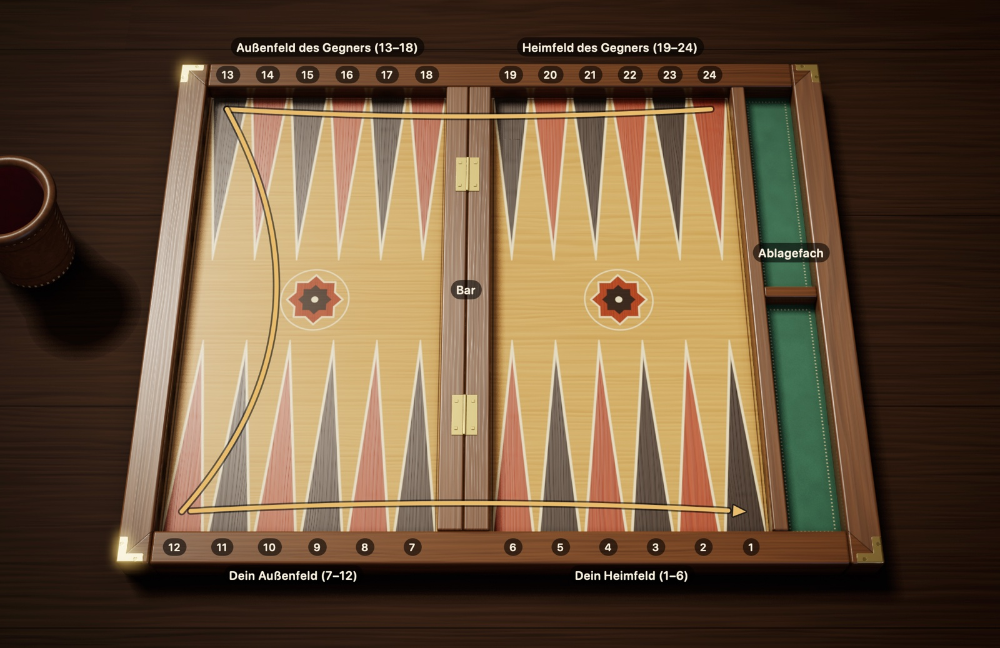
Abbildung 2.1Das Backgammonbrett: 24 Felder, vier Viertel und die Bar. Du sitzt unten. Der goldene Pfeil zeigt den Weg deiner Steine von Feld 24 bis Feld 1; dein Gegner geht denselben Weg in umgekehrter Richtung.
Die Viertel. Stell dir das Brett wie einen Sportplatz vor, der in vier Viertel geteilt ist; jedes Viertel hat sechs Felder. Die beiden Viertel vor dir sind deine Seite, die beiden gegenüber die Seite deines Gegners:
Dein Heimfeld (1–6): Hier endet die Reise. Sind die Steine hier angekommen, werden sie vom Brett genommen. In Abbildung 2.1 unten rechts.
Dein Außenfeld (7–12): Die letzte Station vor dem Heimfeld. Unten links.
Außenfeld des Gegners (13–18): Die Mitte des Weges. Oben links.
Heimfeld des Gegners (19–24): Hier beginnt die Reise. Oben rechts.
Die Bar. Die Erhöhung in der Mitte des Bretts heißt Bar. Sie hat zwei Aufgaben: Sie trennt die linke von der rechten Bretthälfte, und auf ihr warten geschlagene Steine. Auf das Zählen der Felder hat sie keinen Einfluss; ein Stein, der von Feld 7 auf Feld 6 zieht, macht nur einen Schritt, auch wenn er dabei die Bar überquert.
Die Nummerierung. Jeder zählt von seinem eigenen Heimfeld aus. Deshalb hat jedes Dreieck zwei Namen: Das Feld, das du 1 nennst, nennt dein Gegner 24. Damit es keine Verwechslungen gibt, sind alle Nummern in diesem Buch aus deiner Sicht angegeben.
Die Zugrichtung. Deine Steine ziehen immer zu kleineren Nummern hin. Ein Stein, der oben rechts auf der 24 startet, zieht zuerst am oberen Rand entlang nach links, biegt am linken Rand nach unten ab und zieht dann am unteren Rand entlang nach rechts bis in dein Heimfeld. Die Steine des Gegners gehen denselben Weg in umgekehrter Richtung; deshalb kommen sich beide Seiten unterwegs entgegen.
Gespiegeltes Brett. Manche Spieler haben ihr Heimfeld lieber links. Dann ist das ganze Brett gespiegelt, und die Steine laufen im Uhrzeigersinn. Für die Regeln gibt es zwischen beiden Aufbauten keinerlei Unterschied.
2.2 Die Ausgangsstellung
Jedes Spiel beginnt mit derselben Ausgangsstellung. Verteile deine 15 Steine so auf vier Felder, vom entferntesten zum nächsten:
Feld 24, 2 Steine. Die Ecke im Heimfeld des Gegners. Diese beiden sind deine Steine, die am weitesten von zu Hause entfernt sind.
Feld 13, 5 Steine. Die Ecke oben links, genau in der Mitte des Weges.
Feld 8, 3 Steine. In deinem Außenfeld, zwei Schritte vor dem Heimfeld.
Feld 6, 5 Steine. Das Feld deines Heimfelds, das an die Bar grenzt.
2 + 5 + 3 + 5 ergibt 15. Dein Gegner baut dieselbe Aufstellung von seiner Seite aus auf; seine Steine stehen deshalb auf deinen Feldern 1, 12, 17 und 19. Würdest du das Brett in der Mitte falten, lägen beide Seiten genau übereinander.
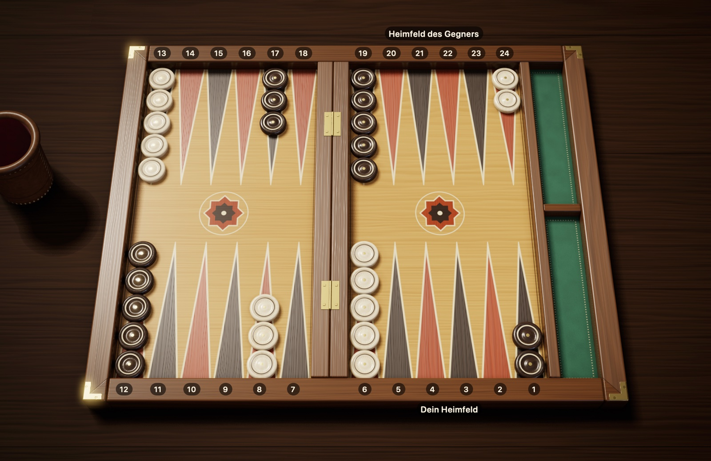
Abbildung 2.2Die Ausgangsstellung: 15 Steine pro Spieler. Deine Steine sind cremefarben, dein Heimfeld liegt unten rechts; die Steine des Gegners sind dunkelbraun, sein Heimfeld liegt oben rechts. Du hast 2 Steine auf der 24, 5 auf der 13, 3 auf der 8 und 5 auf der 6.
Eselsbrücke: Merk dir „2-5-3-5“ und stell die Steine vom hintersten Feld aus auf. Ein Drittel deiner Steine (5 Steine) steht schon in deinem Heimfeld, die übrigen an verschiedenen Stellen des Weges. Den größten Teil des Spiels verbringst du damit, die zurückgebliebenen Steine sicher nach Hause zu bringen.
2.3 Spielbeginn
Wer den ersten Zug macht, entscheiden die Würfel. Jeder Spieler wirft einen einzigen Würfel, und wer die höhere Zahl würfelt, beginnt. Bei gleichen Zahlen zählt der Wurf nicht; beide würfeln erneut, bis die Zahlen verschieden sind.
Für den ersten Zug des Gewinners gibt es zwei unterschiedliche Traditionen:
Internationale Regel: Niemand würfelt neu. Die beiden Würfel auf dem Brett, also deiner und der deines Gegners, bilden zusammen deinen ersten Zug. Hast du eine 5 gewürfelt und dein Gegner eine 3, ziehst du 5-3. Da die Eröffnungswürfel nicht gleich sein können, ist dieser erste Zug nie ein Pasch.
Verbreitete türkische Regel: Der Gewinner nimmt beide Würfel und würfelt neu. Dieser Wurf kann jede Zahl ergeben, auch einen Pasch.
Danach sind die Spieler abwechselnd am Zug und würfeln jedes Mal mit zwei Würfeln.
Neues Spiel. Nach internationalen Regeln beginnt jedes Spiel von vorn mit dem Eröffnungswurf. Im türkischen Tavla eröffnet dagegen meist der Sieger des letzten Spiels.
Würfel-Etikette. Beim Spiel am Tisch gibt es ein paar Gepflogenheiten. Die Würfel werden meist im Becher geschüttelt und in die rechte Bretthälfte geworfen. Mit einem Würfel, der schräg liegt, auf einem Stein liegen bleibt oder vom Brett fällt, wird nicht gezogen; der Wurf wird mit beiden Würfeln wiederholt. Du bist an der Reihe, sobald dein Gegner seine Würfel aufnimmt; würfelst du vorher, zählt der Wurf nicht. Das ist die traditionelle Etikette am Tisch; Turnierordnungen können in diesen Details abweichen, je nachdem, ob mit Uhr, Würfelbecher oder vier Würfeln gespielt wird.
2.4 Türkische und internationale Regeln
In beiden Regelwerken sind das Zählen der Felder, die Würfelregeln und die Sperrwirkung der Punkte gleich. Die Unterschiede betreffen den Spielbeginn, die Wertung und zwei Details im Spiel: Im verbreiteten türkischen Tavla gilt es als verboten, im eigenen Heimfeld zu schlagen und mit demselben Stein weiterzuziehen oder beim Auswürfeln Pips zu verschwenden, obwohl ein Stein ausgewürfelt werden könnte. Die Tabelle unten folgt den verbreiteten Regeln; von Tisch zu Tisch kann es kleine Abweichungen geben.
In Steine und Würfel kannst du nach beiden Regelwerken spielen. Wo sie sich unterscheiden, nennt dieses Buch jeweils beide Regeln; du musst vor dem Spiel nur wählen, nach welchem Regelwerk du spielst.
Tabelle 2.1 Türkisches Tavla und internationale Regeln
Thema
International (mit Dopplerwürfel)
Verbreitetes türkisches Tavla
Erster Zug
Wird mit den Eröffnungswürfeln gezogen, kein Pasch möglich
Wer höher würfelt, würfelt mit beiden Würfeln neu; ein Pasch ist möglich
Wer beginnt das nächste Spiel?
Jedes Spiel beginnt mit einem Eröffnungswurf
Der Sieger des vorigen Spiels
Im eigenen Heimfeld schlagen und mit demselben Stein weiterziehen
Erlaubt
Gilt als verboten (in Steine und Würfel beim neuen Match wählbar; standardmäßig erlaubt)
Beim Auswürfeln einen Stein weiterziehen, obwohl einer ausgewürfelt werden könnte („sallamak“)
Erlaubt
Gilt als verboten (in Steine und Würfel beim neuen Match wählbar; standardmäßig erlaubt)
Dreifacher Gewinn (Backgammon)
Ja (× 3)
Nein, zählt als Gammon (× 2)
Dopplerwürfel
Standard, bei Turnieren Pflicht
Gibt es nicht
Crawford-Regel
Standard bei Matches
Gibt es nicht
2.5 Der Spielbildschirm in Steine und Würfel
Sobald ein Match beginnt, erscheinen rund um das Brett Anzeigen, die den Stand des Spiels zeigen. Abbildung 2.3 stammt aus einem Moment, in dem du am Zug bist; was die Nummern bedeuten, steht darunter.
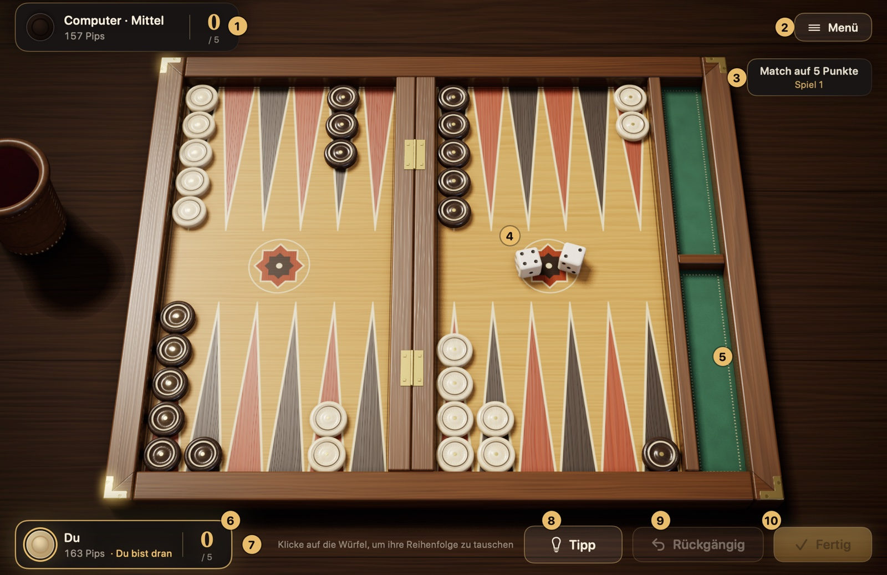
Abbildung 2.3Der Spielbildschirm von Steine und Würfel. Was die nummerierten Elemente bedeuten, steht in der Liste unten.
Schild des Gegners: Zeigt deinen Gegner mit Schwierigkeitsstufe (etwa „Computer · Mittel“), seine Pipzahl und seinen Punktestand im Match. Während der Computer überlegt, steht dort „Denkt nach …“.
Menü: Pausiert das Spiel. Auf der Karte, die sich dann öffnet, kannst du fortsetzen, die Einstellungen, die Karte „Spielregeln“, den Zugverlauf oder die Matches öffnen, aufgeben oder das Match verlassen. Die Esc-Taste bewirkt dasselbe.
Matchanzeige: Zeigt, auf wie viele Punkte das Match gespielt wird (in einer Sitzung steht dort „Sitzung“), und das wievielte Spiel gerade läuft. Bei internationalen Regeln steht darunter die Doppleranzeige.
Würfel: Deine Würfel fallen in die rechte Bretthälfte, die des Computers in die linke.
Ablagefach: Das grüne Fach rechts neben dem Brett. Deine ausgewürfelten Steine kommen in die untere Hälfte, die des Gegners in die obere.
Dein Schild: Zeigt deine Pipzahl, deinen Punktestand im Match und, wenn du am Zug bist, den Hinweis „Du bist dran“.
Hinweiszeile: Sagt dir kurz, was du gerade tun kannst. Versuchst du einen ungültigen Zug, liest du hier auch den Grund, zum Beispiel „Dieser Stein kann mit diesen Würfeln nicht ziehen“.
Tipp: Markiert auf dem Brett den Zug, den die Meister-Engine empfiehlt (⌘I).
Rückgängig: Nimmt die Schritte zurück, die du in diesem Zug gemacht hast (⌘Z); so kannst du es dir vor dem Bestätigen noch anders überlegen.
Fertig: Beendet deinen Zug und gibt an den Gegner ab (Return).
Vor dem Spiel. Im Panel „Neues Match“ wählst du die Schwierigkeitsstufe, das Regelwerk (türkisches Tavla oder international), die Matchlänge oder bei internationalen Regeln eine Sitzung sowie die Farbe deiner Steine. Diese Einstellungen gelten für das ganze Match; mehr dazu in Abschnitt 5.1.
Wie läuft ein Zug ab? Bist du an der Reihe, klickst du auf „Würfeln“ oder drückst die Leertaste; die Würfel fallen aus dem Lederbecher aufs Brett. Du bewegst einen Stein, indem du ihn mit der Maus an sein Ziel ziehst oder erst auf den Stein und dann auf das Zielfeld klickst; ziehbare Steine leuchten, ihre möglichen Zielfelder sind mit einem Ring markiert. Bist du unsicher, gehst du mit „Rückgängig“ zurück; hast du dich entschieden, klickst du auf „Fertig“. Einen regelwidrigen Zug nimmt die App ohnehin nicht an.
Was sagt die Pipzahl? Die Pipzahl auf den Schildern gibt an, wie viele Felder ein Spieler noch zurücklegen muss, um alle seine Steine nach Hause zu bringen und auszuwürfeln. Wer die kleinere Zahl hat, liegt im Rennen vorn. Mehr dazu in Abschnitt 4.2.
Kapitel 3
Die Regeln des Spiels
Dieses Kapitel erklärt alle Regeln des Spiels der Reihe nach: das Ziehen der Steine, den Pasch, den erzwungenen Zug, das Schlagen und das Einwürfeln geschlagener Steine, das Auswürfeln, die Wertung und den Dopplerwürfel.
3.1 Das Ziehen der Steine
Wer am Zug ist, würfelt mit zwei Würfeln und zieht Steine um die gewürfelten Zahlen vor. Dieser Abschnitt erklärt Schritt für Schritt, wie du einen Würfel ziehst.
Die Würfel lesen
Die Würfel sagen dir, wie viele Felder deine Steine vorrücken. Eine gewürfelte 4 bedeutet, dass ein Stein 4 Felder vorrückt. Beim Zählen zählst du das Feld, auf dem der Stein steht, nicht mit; du beginnst beim nächsten Feld. Ein Stein auf Feld 13 zieht mit einer 4 auf Feld 9: Du zählst 12, 11, 10, 9.
Beim Backgammon gibt es keinen Rückwärtsgang: Ein Stein darf nur zu Feldern mit kleineren Nummern ziehen, also näher an sein Heimfeld heran.
Zwei Würfel, zwei getrennte Züge
Stell dir die beiden Würfel als zwei getrennte Rechte vor. Bei einer 5-3 setzt du sie ein, wie du willst:
Du kannst die 5 mit einem Stein ziehen und die 3 mit einem anderen.
Du kannst beide Würfel demselben Stein geben und ihn insgesamt 8 Felder weit ziehen; dabei darfst du zuerst die 3 ziehen oder zuerst die 5.
Ziehst du beide Würfel mit einem Stein, macht er in Wirklichkeit zwei getrennte Sprünge und setzt kurz auf dem Feld auf, auf dem der erste Sprung endet. Auch dieses Zwischenfeld muss ein Feld sein, auf das der Stein ziehen darf. Die Summe beider Würfel auf einmal zu zählen und das Zwischenfeld zu überspringen, ist nicht möglich.
Abbildung 3.1Zwei Wege, eine 5-3 zu ziehen. Grüne Pfeile, Weg 1: 8→3 (5) und 6→3 (3); zwei verschiedene Steine machen einen Punkt auf Feld 3. Blaue Pfeile, Weg 2: 24→21 (3), dann 21→16 (5); derselbe Stein zieht insgesamt 8 Felder. Derselbe Stein kann nicht zuerst die 5 ziehen: Das rot umrandete Feld 19 ist ein Punkt des Gegners und kann keine Zwischenstation sein.
Umgekehrt gilt auch: Einen einzelnen Würfel kannst du nicht aufteilen. Eine 5 als 3 und 2 auf zwei verschiedene Steine zu verteilen, ist regelwidrig; jeder Würfel gehört ungeteilt zu genau einem Stein.
Wohin darf ein Stein ziehen?
Wenn du einen Stein ziehst, kommt es darauf an, was auf dem Zielfeld steht. Es gibt vier Möglichkeiten:
Tabelle 3.1 Darf ein Stein auf das Zielfeld ziehen?
Was steht auf dem Zielfeld?
Darf der Stein dorthin?
Gar kein Stein (leeres Feld)
Ja
Einer oder mehrere deiner eigenen Steine
Ja, ohne Obergrenze
Ein einzelner Stein des Gegners (Blot)
Ja, der Stein des Gegners wird geschlagen
Zwei oder mehr Steine des Gegners (Punkt)
Nein
Abbildung 3.2Offene Felder und ein Punkt. Für den Stein auf der 11 gilt: Feld 10 ist leer, er darf dorthin. Auf der 8 stehen deine eigenen Steine; dort darfst du beliebig viele Steine aufeinandersetzen. Auf der 7 steht ein einzelner Stein des Gegners (ein Blot); du darfst dorthin ziehen, und dieser Stein wird geschlagen. Auf der rot umrandeten 9 stehen zwei Steine des Gegners (ein Punkt): Der gestrichelte rote Pfeil zeigt, dass du dort nicht hinziehen darfst.
Ein Feld, auf dem zwei oder mehr Steine zusammen stehen, nennen wir einen Punkt. Stell dir einen Punkt wie eine Mauer vor: Der Gegner kann weder auf dieses Feld ziehen noch es bei einem Zug mit beiden Würfeln als Zwischenstation benutzen. Eigene Punkte klug aufzubauen, ist das wirksamste Mittel, um dem Gegner den Weg zu verengen.
3.2 Der Pasch
Zeigen beide Würfel dieselbe Zahl (von 1-1 bis 6-6), bekommst du eine Prämie: Du ziehst diese Zahl nicht zweimal, sondern ganze viermal. Wer 5-5 würfelt, macht vier getrennte Züge zu je 5 und kommt insgesamt 20 Felder weit. Solche Würfe heißen Pasch.
Die vier Züge darfst du beliebig verteilen: je einmal auf vier Steine, je zweimal auf zwei Steine oder viermal auf einen einzigen Stein. Ziehst du einen Stein mehrere Schritte weit, muss jede Zwischenstation, auf der er aufsetzt, offen sein.
Abbildung 3.3Pasch: vier Züge mit 4-4. Zieh die beiden Steine von der 24 auf die 20 (4 + 4) und zwei Steine von der 13 auf die 9 (4 + 4). Jeder der vier Züge geht über 4 Felder; du kannst sie auf beliebige Steine verteilen.
3.3 Der erzwungene Zug
Nach dem Würfeln hast du nicht das Recht zu sagen: „Diesen Zug lasse ich aus.“ Gibt es einen Zug, den die Würfel erlauben, musst du ihn machen. Welchen Würfel du wie nutzt, findest du mit diesen Fragen heraus:
Gibt es einen Zug, der beide Würfel nutzt? Dann musst du ihn machen. Lässt der erste Zug, der dir einfällt, einen Würfel ungenutzt, such einen anderen Weg, bei dem beide Würfel passen.
Lässt sich nur ein Würfel ziehen? Dann ziehst du diesen, der andere verfällt.
Lassen sich die Würfel einzeln ziehen, aber nicht beide zusammen? Dann hast du keine Wahl: Du ziehst den höheren Würfel. Abbildung 3.4 zeigt das.
Lässt sich gar kein Würfel ziehen? Dann verfällt dein Wurf, und der Gegner ist am Zug.
Hast du einen Pasch? Passen nicht alle vier Züge, musst du so viele Züge machen, wie regelgerecht möglich sind; hängt diese Zahl von der Reihenfolge der Züge ab, musst du die Reihenfolge wählen, die mehr Züge ermöglicht. Der Rest verfällt.
Abbildung 3.4Regel des höheren Würfels: 6-5. Der Stein auf der 14 kann mit der 6 auf die 8 (grüner Pfeil) oder mit der 5 auf die 9 (gestrichelter Pfeil) ziehen, aber nicht beide Würfel ziehen: Beide Wege führen im zweiten Schritt auf Feld 3 (roter Rahmen), einen Punkt des Gegners. Deine übrigen Steine tief im Heimfeld können keinen der beiden Würfel ziehen. Lassen sich die Würfel einzeln, aber nicht zusammen ziehen, wird der höhere gezogen: 14→8.
Aus diesen Regeln ergibt sich manchmal, dass dir nur ein einziger möglicher Zug bleibt; das nennt man einen erzwungenen Zug. Im digitalen Backgammon überwacht die App diese Regeln selbst und lässt keinen regelwidrigen Zug zu; am echten Brett musst du selbst darauf achten.
3.4 Blots und Schlagen
Was Backgammon spannend macht, ist das Schlagen. Zuerst gilt es, zwei Situationen auseinanderzuhalten:
Blot: Ein Stein, der allein auf einem Feld steht. Er ist ungeschützt; zieht der Gegner auf ihn, verliert er seinen Platz.
Punkt: Ein Feld, auf dem mindestens zwei Steine derselben Farbe stehen. Die Steine hier sind unantastbar.
Ziehst du einen Stein auf das Feld, auf dem ein Blot des Gegners steht, hast du diesen Blot geschlagen. Der geschlagene Stein wird vom Brett genommen und auf die Bar in der Mitte gesetzt. Für den Gegner ist das ein empfindlicher Rückschlag: Der Stein muss seine Reise ganz von vorn beginnen, und bis er wieder auf dem Brett ist, sind dem Gegner die Hände gebunden.
Abbildung 3.5Schlagen: Mit 13→9 wird ein Blot geschlagen. Mit der 4 ziehst du 13→9 auf den einzelnen Stein des Gegners und schlägst ihn; der geschlagene Stein kommt auf die Bar (gestrichelter Pfeil). Mit der 2 ziehst du 11→9, bringst so einen zweiten Stein dazu und machst einen Punkt auf der 9; jetzt kann man dich dort nicht mehr schlagen.
Das solltest du wissen:
Schlagen ist keine Pflicht. Auch wenn du einen Blot schlagen könntest, darfst du einen anderen Zug wählen.
Nach dem Schlagen darfst du mit demselben Stein weiterziehen. Mit einer 4-2 kannst du zum Beispiel einen Stein 4 Felder weit ziehen und schlagen und denselben Stein dann noch 2 Felder weiterziehen. Das nennt man „Schlagen und Weiterziehen“ (türkisch „vur kaç“). Nach internationalen Regeln ist das überall auf dem Brett erlaubt; im verbreiteten türkischen Tavla und im griechischen Portes ist es dagegen verboten, im eigenen Heimfeld zu schlagen und mit demselben Stein weiterzuziehen. Spielst du in Steine und Würfel nach türkischen Regeln, kannst du dieses Verbot beim neuen Match mit der Option „Nach Schlag Halt“ einschalten; standardmäßig ist es ausgeschaltet.
Du kannst in einem Zug mehr als einen Blot schlagen; ein Stein kann zum Beispiel auf seiner Zwischenstation einen Blot schlagen und auf dem Zielfeld einen weiteren.
Dieselben Regeln gelten auch für dich. Ein Blot, den du stehen lässt, wird geschlagen, wenn der Gegner die passende Zahl würfelt. Versuche deshalb nach Möglichkeit, deine Steine paarweise zu halten.
3.5 Geschlagene Steine einwürfeln
Wird einer deiner Steine geschlagen, hast du bei deinem nächsten Zug nur eine Aufgabe: diesen Stein zurück aufs Brett zu bringen. Solange ein Stein von dir auf der Bar wartet, gelten deine übrigen Steine als eingefroren.
Wo kommt er herein? Ein geschlagener Stein beginnt seine Reise von vorn, also im Heimfeld des Gegners. Auf welchem Feld er einsteigt, bestimmt der Würfel. Zähle das Heimfeld des Gegners vom Rand zur Bar hin von 1 bis 6: Würfelst du eine 1, kommst du auf das Feld in der Ecke des Bretts, bei einer 6 auf das Feld direkt neben der Bar. In deiner Nummerierung:
Tabelle 3.2 Einstiegsfeld eines geschlagenen Steins je nach Würfel
Würfel
Einstiegsfeld
1
24
2
23
3
22
4
21
5
20
6
19
Auf dem Feld, das der Würfel anzeigt, steht vielleicht gar kein Stein, vielleicht stehen dort deine eigenen Steine oder ein einzelner Stein des Gegners. In allen drei Fällen kannst du einwürfeln; im letzten schlägst du dabei den gegnerischen Stein. Gesperrt ist für dich nur ein Feld, auf dem der Gegner einen Punkt hat.
Abbildung 3.6Geschlagenen Stein einwürfeln: 5-2. Dein Stein auf der Bar kommt im Heimfeld des Gegners herein: mit einer 1 auf die 24, mit einer 2 auf die 23 … mit einer 6 auf die 19. Mit der 5 geht es nicht: Auf Feld 20 hat der Gegner einen Punkt (roter Rahmen). Mit der 2 würfelst du auf das leere Feld 23 ein (grüner Rahmen). Danach ziehst du die 5 mit einem anderen Stein oder mit dem eingewürfelten.
Einwürfeln Schritt für Schritt:
Würfle und sieh nach, welchem Feld im Heimfeld des Gegners jeder Würfel entspricht.
Ist mindestens eines dieser Felder für dich offen, setze deinen Stein dorthin.
Das Einwürfeln verbraucht einen Würfel. Der andere ist frei; du ziehst ihn mit einem beliebigen Stein, auf Wunsch auch mit dem gerade eingewürfelten.
Hast du zwei Steine auf der Bar, werden beide Würfel zum Einwürfeln gebraucht. Kann nur einer hereinkommen, setzt du ihn ein; da der zweite Stein auf der Bar wartet, kannst du in dieser Runde nichts anderes ziehen.
Eingewürfelt wird mit einem einzelnen Würfel. Angenommen, du hast 5-2 gewürfelt; die 20 und die 23 sind Punkte des Gegners, Feld 18 ist leer. Du kannst nicht beide Würfel zusammenzählen und mit 7 Feldern direkt auf die 18 ziehen. Der Stein muss zuerst mit einem einzelnen Würfel auf einem offenen Feld im Heimfeld des Gegners einsteigen; hier sind beide Felder gesperrt, also kommt er nicht herein.
Tanzen
Sind beide Felder, die die Würfel anzeigen, Punkte des Gegners, bleibt dein Stein in diesem Zug auf der Bar. Bei diesem unglücklichen Wurf sagt man, der Stein tanzt. Da du keinen anderen Stein ziehen darfst, solange einer auf der Bar steht, verfällt dein Wurf; beim nächsten Mal versuchst du dein Glück erneut.
Ausgesperrt
Am schlimmsten ist es, wenn alle sechs Felder im Heimfeld des Gegners Punkte sind. Dann gibt es, was du auch würfelst, kein Einstiegsfeld; du bist ausgesperrt. Bis der Gegner einen seiner Punkte auflöst, setzt du jedes Mal aus; am Tisch musst du nicht einmal würfeln, der Gegner ist direkt wieder am Zug. In Steine und Würfel ist es genauso: Es wird nicht gewürfelt, auf dem Bildschirm steht „Ausgesperrt“, und der Gegner ist direkt wieder am Zug.
Abbildung 3.7Ausgesperrt: Das Heimfeld des Gegners ist ganz geschlossen. Dein Stein auf der Bar könnte auf jedem offenen Feld zwischen 19 und 24 einwürfeln, aber alle sechs Felder sind Punkte (rote Rahmen). Das heißt ausgesperrt: Bis der Gegner einen Punkt öffnet, verstreicht dein Zug, ohne dass gewürfelt wird.
3.6 Auswürfeln
Auf der Zielgeraden des Rennens werden die Steine vom Brett genommen; das nennt man Auswürfeln. Dafür gibt es eine Voraussetzung: Alle deine Steine auf dem Brett müssen in deinem Heimfeld stehen, also auf den Feldern 1–6. Steht auch nur ein einziger Stein draußen oder wartet er auf der Bar, kannst du nicht mit dem Auswürfeln beginnen.
Die Grundregel
Die Regel ist einfach: Die Augenzahl des Würfels zeigt das Feld, von dem du einen Stein nimmst. Bei einer 6 nimmst du einen Stein von Feld 6, bei einer 2 einen von Feld 2, und legst ihn in den freien Raum am Rand des Bretts. Ein ausgewürfelter Stein ist endgültig aus dem Spiel.
Abbildung 3.8Auswürfeln: zwei Steine mit 6-4. Mit der 6 nimmst du einen Stein von Feld 6, mit der 4 einen von Feld 4 und legst beide in das Ablagefach rechts. Auswürfeln darfst du erst, wenn alle 15 Steine in deinem Heimfeld stehen.
Wenn auf dem Feld des Würfels kein Stein steht
Manchmal ist das Feld, das der Würfel anzeigt, leer. Dann stell dir diese beiden Fragen der Reihe nach:
Habe ich einen Stein auf einem Feld mit höherer Nummer? Dann darfst du mit diesem Würfel keinen Stein von einem niedrigeren Feld auswürfeln; du ziehst den Würfel, meist indem du einen Stein auf dem höheren Feld vorrückst.
Habe ich weiter oben gar keinen Stein mehr? Dann würfelst du einen Stein von dem höchsten Feld aus, auf dem du noch Steine hast. Steht dein entferntester Stein zum Beispiel auf der 4, würfeln ihn sowohl eine 6 als auch eine 5 aus.
Abbildung 3.9Auswürfeln: Steht weiter oben ein Stein, wird er vorgerückt. Zur 5: Feld 5 ist leer, aber auf dem höheren Feld 6 steht ein Stein; mit der 5 darfst du weder von der 3 noch von der 1 auswürfeln. Du ziehst die 5, indem du einen Stein von der 6 vorrückst (6→1), und mit der 1 würfelst du einen Stein von Feld 1 aus. Ein anderer Weg: zuerst mit der 1 6→5, dann mit der 5 diesen Stein von Feld 5 auswürfeln. Im Ablagefach liegen bereits 10 ausgewürfelte Steine.Abbildung 3.10Auswürfeln: vom höchsten Feld. Auf den Feldern 6 und 5 und weiter oben hast du keine Steine mehr. Deshalb würfelst du mit beiden Würfeln je einen Stein vom höchsten besetzten Feld aus, also von der 4.
Du musst nicht auswürfeln
Hast du einen anderen regelgerechten Zug, musst du keinen Stein auswürfeln. Steine im Heimfeld weiterzuziehen und das Auswürfeln aufzuschieben, heißt auf Türkisch „sallamak“. Um dem Gegner keinen Blot zum Schlagen anzubieten, ist das manchmal die klügste Wahl. Es ist auch erlaubt, denselben Stein mit einem Würfel vorzurücken und mit dem anderen auszuwürfeln. Diese Freiheit gehört zur internationalen Regel; im verbreiteten türkischen Tavla gilt es als verboten, einen Stein mit dem kleineren Würfel vorzurücken und Pips zu verschwenden, obwohl ein Stein ausgewürfelt werden könnte. Spielst du in Steine und Würfel nach türkischen Regeln, kannst du dieses Verbot beim neuen Match mit der Option „Auswürfelpflicht“ einschalten; standardmäßig ist es ausgeschaltet.
Wenn du beim Auswürfeln geschlagen wirst
Hat der Gegner noch einen Stein in deinem Heimfeld, kann ein Blot, den du beim Auswürfeln stehen lässt, geschlagen werden. Dann stockt das Auswürfeln: Der geschlagene Stein muss erst im Heimfeld des Gegners einwürfeln, das Brett umrunden und in dein Heimfeld zurückkehren. Sobald alle deine Steine, die noch auf dem Brett sind, wieder in deinem Heimfeld stehen, machst du dort weiter, wo du aufgehört hast.
3.7 Spielende und Punkte
Wer zuerst alle seine Steine ausgewürfelt hat, gewinnt das Spiel. Wie hoch der Gewinn ausfällt, hängt davon ab, wie weit dein Gegner zurückliegt, wenn das Spiel endet. Sieh dir am Ende die Steine des Gegners an; einer der drei folgenden Fälle trifft zu:
Tabelle 3.3 Spielergebnis und Punkte
Ergebnis
Lage des Gegners
International, ohne Doppler
International, mit Doppler
Türkisches Tavla
Einfaches Spiel
Hat mindestens einen Stein ausgewürfelt
1
Dopplerwert × 1
1
Gammon
Hat keinen Stein ausgewürfelt
2
Dopplerwert × 2
2
Backgammon
Hat keinen Stein ausgewürfelt und noch einen Stein auf der Bar oder in deinem Heimfeld
3
Dopplerwert × 3
2 (zählt als Gammon)
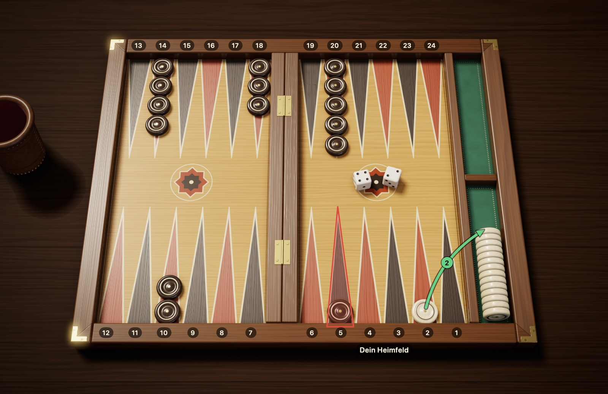
Abbildung 3.11Backgammon: Der Gegner steht bei null und hat noch einen Stein in deinem Heimfeld. Mit der 2 hast du deinen letzten Stein ausgewürfelt und das Spiel gewonnen. Der Gegner hat keinen einzigen Stein ausgewürfelt: Das allein bedeutet ein Gammon (2 Punkte). Außerdem steht auf dem rot umrandeten Feld 5, also in deinem Heimfeld, noch ein Stein von ihm: ein Backgammon (3 Punkte).
Beispiele:
Hat der Gegner 4 Steine ausgewürfelt, wenn du deinen letzten Stein ausgewürfelt hast, gewinnst du ein einfaches Spiel: 1 Punkt.
Hat der Gegner keinen einzigen Stein ausgewürfelt, aber weder auf der Bar noch in deinem Heimfeld einen Stein, gewinnst du ein Gammon: 2 Punkte.
Hat der Gegner keinen Stein ausgewürfelt und steht noch ein Stein von ihm auf der Bar oder in deinem Heimfeld, gewinnst du ein Backgammon: 3 Punkte.
Wer ein Gammon gewinnt, während der Dopplerwürfel auf 8 steht, bekommt 8 × 2 = 16 Punkte.
Im türkischen Tavla ist ein Backgammon kein eigenes Ergebnis; auch dieser Fall zählt als Gammon und bringt 2 Punkte. Kläre vor dem Spiel, nach welchem Regelwerk ihr spielt.
Punkte im Match. Backgammon wird meist nicht als einzelnes Spiel gespielt, sondern bis zu einer bestimmten Punktzahl; bei Turnieren sind das in der Regel 5, 7 oder 11 Punkte. Am Ende jedes Spiels werden dem Gewinner seine Punkte gutgeschrieben; wird mit Doppler gespielt, werden die Punkte mit dem Dopplerwert multipliziert. Wer zuerst die Zielpunktzahl erreicht, gewinnt das Match. Deshalb kann ein gewonnenes oder abgewendetes Gammon über den Ausgang des Matches entscheiden.
3.8 Der Dopplerwürfel
Der Dopplerwürfel ist ein Würfel mit Zahlen, der aber nie geworfen wird. Auf seinen Seiten stehen 2, 4, 8, 16, 32 und 64, und er zeigt nur an, wie viel das Spiel gerade wert ist. Beim Tavla, wie man es in der Türkei im Alltag spielt, sieht man ihn kaum; bei internationalen Turnieren und Online-Matches ist er dagegen unverzichtbar. Auch in Steine und Würfel gibt es einen Dopplerwürfel; er kommt zum Einsatz, wenn du zu Beginn das internationale Regelwerk wählst. Wie du doppelst und auf ein Angebot antwortest, erklärt Abschnitt 5.4. Spielst du ohne Doppler, kannst du diesen Abschnitt überspringen.
Wo der Doppler liegt und was er bedeutet
Zu Spielbeginn liegt der Doppler in der Mitte zwischen den beiden Spielern, und auf seiner Oberseite steht 64. Da der Doppler keine 1 hat, bedeutet die 64 hier: „noch nicht verdoppelt, das Spiel zählt 1 Punkt“. Solange der Doppler in der Mitte liegt, darf jeder von euch beiden als Erster doppeln. Ist ein Doppel angenommen, zeigt die Seite, auf der der Doppler liegt, wer als Nächster doppeln darf. In Steine und Würfel wird der Doppler unter der Matchanzeige oben rechts angezeigt: Anfangs steht dort „1 Doppler in der Mitte“; wurde ein Doppel angenommen, liest du dort mit dem Wert des Dopplers „Doppler bei dir“ oder „Doppler beim Gegner“.
Doppeln Schritt für Schritt
Wann? Doppeln darfst du nur, wenn du am Zug bist, und bevor du die Würfel anrührst. Ist gewürfelt, ist die Gelegenheit für diesen Zug vorbei.
Wie? Glaubst du, dass du gut stehst, drehst du den Doppler auf den nächsten Wert (beim ersten Mal auf 2), schiebst ihn dem Gegner hin und sagst: „Ich doppele.“ Das heißt: „Spielen wir dieses Spiel um den doppelten Wert?“
Was kann der Gegner tun?
Annehmen: Er legt den Doppler mit dem verdoppelten Wert (beim ersten Doppel 2) nach oben auf seine Seite; das Spiel geht aus derselben Stellung weiter, jetzt mit doppeltem Wert.
Ablehnen: Er gibt das Spiel sofort verloren. Er verliert so viele Punkte, wie der Doppler vor dem Angebot wert war; beim ersten Angebot ist das 1 Punkt.
Wer darf als Nächster doppeln? Der Doppler geht an den Spieler, der das Doppel angenommen hat, und nur er darf als Nächster verdoppeln. Deshalb wechseln sich die Angebote immer ab; derselbe Spieler kann nicht zweimal hintereinander verdoppeln.
Beispiel
Angenommen, dein Gegner hat zu Beginn des Spiels gedoppelt und du hast angenommen; der Doppler steht auf 2 und liegt bei dir. Ein paar Züge später hat sich das Spiel zu deinen Gunsten gewendet, also drehst du den Doppler auf 4 und schiebst ihn dem Gegner hin. Lehnt er ab, gewinnst du das Spiel und bekommst 2 Punkte. Nimmt er an, liegt der Doppler mit der 4 bei ihm, und die Punkte am Ende des Spiels liest du in der Zeile „4“ von Tabelle 3.4 ab.
Tabelle 3.4 Gewinnpunkte je nach Dopplerwert
Doppler
Einfaches Spiel
Gammon
Backgammon
In der Mitte (1)
1
2
3
2
2
4
6
4
4
8
12
8
8
16
24
Das solltest du wissen:
Das Verdoppeln hat keine Obergrenze; auch nach 64 verdoppelt sich der Wert weiter auf 128, 256 und so fort. Solch hohe Werte werden aber nur sehr selten erreicht.
Hast du das Recht zu doppeln, hindert dich ein Stein auf der Bar nicht daran, ein Doppel anzubieten. In Steine und Würfel gibt es nur eine Ausnahme: Bist du ausgesperrt, weil das Heimfeld des Gegners ganz geschlossen ist, verstreicht dein Zug ohne Wurf, und in diesem Zug wird auch nicht gedoppelt.
Ob man doppelt oder nicht und ob man ein Doppel annimmt oder nicht, gehört zu den wichtigsten Entscheidungen, bei denen es auf Können ankommt; Anhaltspunkte gibt es unter der nächsten Überschrift.
Doppler-Entscheidungen
Den Doppler richtig einzusetzen, gehört zu den feinsten Künsten im Backgammon. Das Folgende sind keine festen Regeln, sondern solide Faustregeln für den Anfang.
Zum Annehmen: Wird dir ein Doppel angeboten, frag dich ungefähr: „Würde ich dieses Spiel mindestens einmal gewinnen, wenn ich es viermal spielte?“ Liegt deine Gewinnchance bei etwa einem Viertel oder darüber, ist Annehmen meist richtig. Denn lehnst du ab, steht dein Verlust fest; nimmst du an, hast du die Chance, das Spiel zu drehen und den Doppler später zu deinen Gunsten einzusetzen. Diese Schwelle von 25 % stammt aus dem einfachsten Modell, das Gammons und erneutes Doppeln nicht berücksichtigt: Der Besitz des Dopplers senkt die Schwelle etwas, das Gammonrisiko hebt sie an, und der Matchstand kann sie in beide Richtungen verschieben.
Zum Doppeln: Stehst du deutlich besser, ist das Spiel aber noch nicht entschieden, ist es Zeit zu doppeln. Vermeide drei Fehler:
Zu früh doppeln: Ein Doppel bei nur leichtem Vorteil verschafft dem Gegner ein bequemes Annehmen und obendrein den Besitz des Dopplers.
Zu spät doppeln: Deine Stellung wird so gut, dass der Gegner nicht mehr annimmt und das Spiel für 1 Punkt aufgibt; hättest du einen Zug früher gedoppelt, hätte er angenommen, und du hättest um den doppelten Wert gespielt. Das nennt man „den Markt verpassen“.
Zu gut zum Doppeln: Die Stellung kann so stark sein, dass der Gegner ein Doppel sicher ablehnen würde. Ist der Gewinn, den du erwartest, wenn du ohne Doppel weiterspielst und auf ein Gammon setzt, höher als der 1 Punkt, den dir die Ablehnung des Gegners bringen würde, ist die Stellung „zu gut zum Doppeln“. In Sitzungen mit Jacoby-Regel gilt diese Überlegung nicht; dort zählt ein Gammon ohne Doppel nur 1 Punkt, also muss man doppeln. Im Matchspiel verändert außerdem der Spielstand den Wert eines Gammons.
Die 8-9-12-Regel im reinen Rennen. Ist der Kontakt vorbei und das Spiel nur noch ein Rennen um Pips, entscheidet die Pipzahl. Teile den Unterschied durch die Pipzahl des Führenden und rechne das Ergebnis in Prozent um; liegst du zurück, teilst du also durch die Zahl des Gegners:
Tabelle 3.5 Die 8-9-12-Regel im reinen Rennen
Pip-Unterschied (bezogen auf die Pipzahl des Führenden)
Entscheidung
8 % vorn
Über das erste Doppel nachdenken
9 % vorn
Liegt der Doppler bei dir, erneut doppeln
Bis 12 % zurück
Ein angebotenes Doppel annehmen
Mehr als 12 % zurück
Ablehnen
Beispiel: Deine Pipzahl ist 80, die des Gegners 88; du liegst also 8 Pips vorn. Das sind 10 % von 80, der Pipzahl des Führenden, und du bist im Bereich fürs Doppeln. Da die Regel auf der reinen Pipzahl beruht, sei etwas vorsichtiger, wenn sich deine Steine auf den niedrigen Feldern stapeln. Die Regel gilt, wenn du am Zug bist, der Kontakt ganz vorbei ist und das Rennen mittellang oder lang ist; sind nur noch wenige Steine übrig, musst du statt der Prozentrechnung auf die Stellung der Steine schauen und im Match zusätzlich den Spielstand bedenken.
Regeln für Match und Sitzung
Crawford-Regel: Ist im Match einer der Spieler zum ersten Mal nur noch einen Punkt vom Ziel entfernt (im Match auf 5 Punkte also bei 4 Punkten), wird im unmittelbar folgenden Spiel ohne Doppler gespielt; dieses Spiel heißt Crawford-Spiel. Ist es vorbei, ist der Doppler wieder im Spiel und bleibt es bis zum Ende des Matches. Die Regel greift in einem Match nur ein einziges Mal; erreicht später auch der andere Spieler diesen Punktestand, gibt es kein neues Crawford-Spiel. Sie soll verhindern, dass der Zurückliegende jedes Spiel sofort doppelt und den Rückstand in einem einzigen Spiel aufholt. Benannt ist die Regel nach dem amerikanischen Spieler John R. Crawford.
Optionale Regeln (gibt es in Sitzungen, in Matches werden sie nicht verwendet):
Automatische Verdopplung: Zeigen die Eröffnungswürfel dieselbe Zahl, wird der Doppler von selbst auf 2 gedreht und bleibt in der Mitte. Meist ist das auf einmal pro Spiel begrenzt.
Beaver: Wer gedoppelt wird, darf beim Annehmen den Doppler sofort noch einmal verdoppeln und behält ihn trotzdem. Wer gedoppelt hat, kann den Beaver annehmen oder ablehnen; lehnt er ab, verliert er den Wert seines Doppels, beim ersten Doppel sind das 2 Punkte.
Raccoon: Wer auf einen Beaver trifft, also die Seite, die zuerst gedoppelt hat, darf den Wert sofort noch einmal verdoppeln. Der Doppler bleibt bei dem Spieler, der das Doppel angenommen hat; die Gegenseite nimmt den neuen Wert an oder gibt das Spiel zum bisherigen Wert auf. Wie Beaver gibt es Raccoon nur in Sitzungen.
Jacoby-Regel: Wurde im Spiel nie gedoppelt, zählen Gammon und Backgammon nur 1 Punkt. Das ermutigt den Führenden zu doppeln, statt einem Gammon hinterherzujagen.
Kapitel 4
Besser spielen
Die Grundlagen guten Spiels, wenn du die Regeln kennst: ein Beispielspiel, das Pipzählen, Eröffnungszüge, Spielpläne, das Risiko eines Blots und die Strategie beim Auswürfeln.
4.1 Beispielspiel: die ersten fünf Züge
Um die Regeln im Zusammenspiel zu sehen, verfolgen wir Schritt für Schritt die ersten fünf Züge eines Spiels. Das Brett steht in der Ausgangsstellung, gespielt wird nach internationalen Regeln. Die Feldnummern sind aus deiner Sicht angegeben.
Eröffnungswurf. Du würfelst eine 3, dein Gegner eine 1. Du hast höher gewürfelt; deinen ersten Zug machst du mit dieser 3-1. Mit der 3 ziehst du 8→5, mit der 1 6→5 und machst so einen Punkt auf Feld 5. Das ist einer der am häufigsten empfohlenen Eröffnungszüge.
Der Gegner würfelt 6-4. Er lässt einen seiner hinteren Steine laufen: Der Stein auf deinem Feld 1 zieht mit der 6 auf die 7 und mit der 4 auf die 11. Auf der 11 steht er allein, ist also ein Blot.
Du würfelst 4-2. Mit der 2 ziehst du 13→11 und schlägst den Blot des Gegners; sein Stein kommt auf die Bar. Mit der 4 ziehst du 24→20.
Der Gegner würfelt 5-5. Da er einen Stein auf der Bar hat, muss er diesen zuerst einwürfeln. Mit einer 5 müsste er auf dein Feld 5, aber dort hast du einen Punkt. Da alle vier Würfel eine 5 sind, tanzt der Gegner; in diesem Zug kann er keinen Stein ziehen.
Du würfelst 6-5. Deinen verbliebenen Stein auf der 24 ziehst du mit der 6 auf die 18 und mit der 5 auf die 13. Da die 18 leer ist, ist die Zwischenstation frei; auf der 13 stehen ohnehin schon Steine von dir.
Nach fünf Zügen sieht das Brett aus wie in Abbildung 4.1:
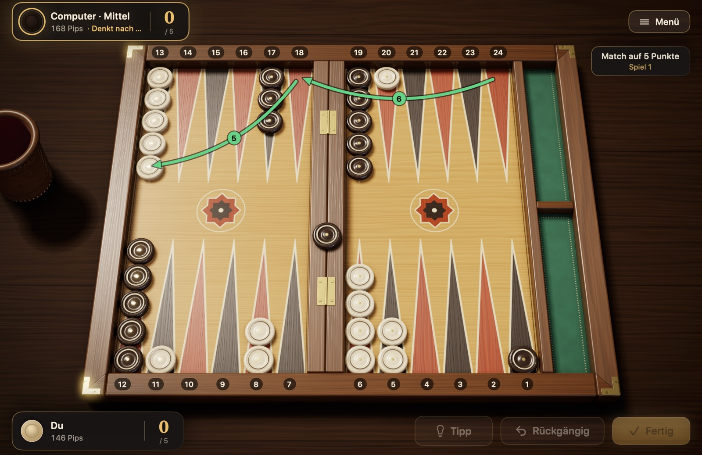
Abbildung 4.1Beispielspiel: Stellung nach dem fünften Zug. Letzter Zug: Mit 6-5 lief der Stein von der 24 zuerst auf die 18, dann auf die 13 (grüne Pfeile). Ein Stein des Gegners wartet auf der Bar; dein Punkt auf Feld 5 erschwert ihm das Einwürfeln. Deine Blots stehen auf der 20 und der 11. Pipzahlen auf den Schildern: du 146, der Gegner 168; der Gegner ist am Zug.
In diesen fünf Zügen kamen alle diese Regeln vor: Ziehen, Punkte machen, Schlagen, Einwürfeln und Tanzen. Auf diese Weise geht das Spiel weiter, bis die Seiten ihre Steine ins Heimfeld gebracht und ausgewürfelt haben.
4.2 Pips zählen
Da Backgammon ein Rennen ist, ist in jedem Moment des Spiels die Frage „Wer ist näher am Ziel?“ sehr wichtig. Ihr Maß ist die Pipzahl: die Gesamtzahl der Felder, die ein Spieler noch ziehen muss, um alle seine Steine ins Heimfeld zu bringen und vom Brett zu nehmen.
Wie wird sie berechnet? Die Entfernung jedes Steins ist die Nummer seines Feldes in deiner eigenen Nummerierung. Ein Stein auf Feld 6 ist 6 Pips entfernt, ein Stein auf Feld 13 ist 13 Pips entfernt. Ein Stein auf der Bar ist am weitesten entfernt und zählt 25. Du addierst die Entfernungen aller Steine.
Zum Beispiel am Anfang: 2 × 24 + 5 × 13 + 3 × 8 + 5 × 6 = 48 + 65 + 24 + 30 = 167 Pips. Beide Spieler beginnen das Spiel mit 167. Mit jedem Zug sinkt deine Zahl um so viel, wie der Stein tatsächlich zieht (würfelst du beim Auswürfeln mit einem höheren Würfel einen Stein vom höchsten Feld aus, sinkt sie nicht um den Würfelwert, sondern um die Nummer des Feldes, auf dem der Stein stand); ein geschlagener Stein dagegen kehrt auf die Bar zurück und lässt die Zahl seines Besitzers auf einen Schlag steigen.
In Steine und Würfel musst du das nicht ausrechnen. Die Pipzahl auf den Schildern wird nach jedem Zug automatisch aktualisiert. Im Beispielspiel aus Abschnitt 4.1 stehst du bei 146 Pips, der Gegner bei 168; du hast also einen Vorsprung von etwa drei Würfen.
Wozu ist das gut?
Liegst du vorn, ist es meist ein guter Plan, Kontakt zu vermeiden und schnell nach Hause zu laufen.
Liegst du zurück, kannst du ein reines Rennen kaum gewinnen; du wartest auf Gelegenheiten, gegnerische Steine zu schlagen oder ihnen den Weg zu versperren.
Spielst du mit Doppler, bestimmt im reinen Rennen der Pip-Unterschied die Doppler-Entscheidungen. Was bei welchem Unterschied zu tun ist, erklärt Abschnitt 3.8 unter „Doppler-Entscheidungen“.
4.3 Eröffnungszüge
Da der erste Zug eines Spiels immer aus derselben Stellung gemacht wird, sind die guten Spielweisen für jeden Wurf durch Computeranalysen weitgehend geklärt. Tabelle 4.1 nennt die allgemein anerkannten Spielweisen für Spiele nach internationalen Regeln, bei denen der Matchstand keine Rolle spielt; im Match kann der Spielstand manche Entscheidungen ändern. Geschrieben wird „von/nach“: 8/5 bedeutet von Feld 8 nach Feld 5; (2) zeigt an, dass derselbe Zug mit zwei Steinen gemacht wird.
Tabelle 4.1 Eröffnungszüge nach internationalen Regeln
Wurf
Empfohlener Zug
Vertretbare Alternative
Ziel
3-1
8/5 6/5
—
Punkt auf Feld 5
4-2
8/4 6/4
—
Punkt auf Feld 4
6-1
13/7 8/7
—
Punkt auf Feld 7, den Weg vor dem Heimfeld sperren
5-3
8/3 6/3
—
Punkt auf Feld 3
6-5
24/13
—
Einen hinteren Stein in einem Zug in Sicherheit bringen
6-4
24/14
24/18 13/9 oder 8/2 6/2
Alle drei Spielweisen fast gleichwertig
6-3
24/18 13/10
24/15
Hinten und in der Mitte zugleich entwickeln
6-2
24/18 13/11
24/16
Hinten und in der Mitte zugleich entwickeln
5-4
24/20 13/8
13/9 13/8
Hinten ein möglicher Anker, in der Mitte ein neuer Stein
5-2
13/8 24/22
13/8 13/11
Sichere Entwicklung aus der Mitte
5-1
13/8 24/23
13/8 6/5
Sicherer Stein, hintere Steine aufteilen
4-3
13/10 13/9
24/21 13/9 oder 24/20 13/10
Bausteine für das Heimfeld heranholen
4-1
24/23 13/9
13/9 6/5
Hintere Steine aufteilen, in der Mitte ein neuer Stein
3-2
24/21 13/11
13/11 13/10
Hintere Steine aufteilen, in der Mitte ein neuer Stein
2-1
13/11 6/5
13/11 24/23
Einen Punkt auf Feld 5 vorbereiten oder hintere Steine aufteilen
Die Spielweisen in Tabelle 4.1 beruhen auf den Computeranalysen der Website Backgammon Galore. Auch die Züge in der Spalte „Vertretbare Alternative“ sind gut; in den Analysen ist der Unterschied zwischen ihnen sehr klein, und du kannst je nach Spielstil wählen. Einsteiger, die sicher spielen wollen, können bei 2-1 13/11 24/23 wählen und bei 6-4 das 8/2 6/2, das gar keinen Blot stehen lässt. Zum Vergleich: Der Blot nach 24/14 wird von 11 der 36 möglichen Würfe geschlagen; von den zwei Blots nach 24/18 13/9 wird mindestens einer von 27 der 36 Würfe geschlagen.
Nach internationaler Regel ist der erste Zug nie ein Pasch. Spielst du nach türkischer Regel, kann auch der erste Wurf ein Pasch sein; dann sind diese Spielweisen ein guter Anfang:
Tabelle 4.2 Pasch als erster Wurf nach türkischer Regel
Pasch
Empfohlener Zug
6-6
24/18(2) 13/7(2)
5-5
13/3(2)
4-4
24/20(2) 13/9(2)
3-3
8/5(2) 6/3(2)
2-2
13/11(2) 6/4(2)
1-1
8/7(2) 6/5(2)
Auswendig lernen musst du diese Tabellen nicht. Aber es ist lehrreich, die gemeinsame Logik dahinter zu sehen: Mach nach Möglichkeit neue Punkte in deinem Heimfeld oder direkt davor; geht das nicht, bring die hinteren Steine in Bewegung, und lass keine Steine einzeln an Stellen stehen, an denen sie leicht geschlagen werden.
4.4 Grundlegende Spielpläne
Die meisten Backgammonspiele laufen auf einen von wenigen vertrauten Plänen hinaus. Welcher zu dir passt, bestimmen der Pip-Unterschied und die Punkte auf dem Brett. Dass man im Lauf des Spiels von einem Plan zum anderen wechselt, ist ganz normal.
Laufspiel: Liegst du bei der Pipzahl vorn, löst du den Kontakt zum Gegner und bringst alle deine Steine schnell nach Hause. Ist der Kontakt vorbei, wird das Spiel zu einem reinen Würfelrennen, und meist gewinnt, wer vorn liegt.
Haltespiel (Anker): Du hältst im Heimfeld des Gegners mit zwei Steinen einen Punkt. Dieser „Anker“ schützt dich davor, geschlagen zu werden, und gibt dir die Chance, einen Blot zu schlagen, wenn der Gegner auf dem Heimweg einen stehen lässt. Liegst du zurück, ist das der solideste Plan.
Primespiel: Mit nebeneinanderliegenden Punkten baust du vor den hinteren Steinen des Gegners eine Sperre. Stehen sechs Punkte in einer Reihe, kommt der Stein dahinter mit keinem Wurf vorbei; du schiebst die Prime langsam auf dein Heimfeld zu und drängst den Gegner in die Enge.
Blitz: Du schlägst die Steine, die der Gegner in dein Heimfeld bringt, immer wieder und schließt dein Heimfeld schnell. Ein erfolgreicher Blitz sperrt den Gegner aus und bringt oft ein Gammon; misslingt er, bleiben deine eigenen Blots zurück.
Backgame: Liegst du weit zurück, hältst du im Heimfeld des Gegners zwei Anker und wartest darauf, dass er beim Heimbringen seiner Steine einen Blot stehen lässt. Das ist ein Rettungsplan, kein Anfang, den man bewusst wählt.
Das sind keine mechanischen Regeln, sondern Anhaltspunkte für dein Gespür. Timing, die Qualität deiner Punkte, die Lage der hinteren Steine und das Gammonrisiko können das Gegenteil dessen verlangen, was der Pip-Unterschied nahelegt: Eine starke Prime bei großem Pip-Vorsprung sofort aufzugeben, ist ebenso ein Fehler, wie einen gut laufenden Blitz abzubrechen, nur weil man zurückliegt.
4.5 Das Risiko eines Blots
Manchmal lässt es sich nicht vermeiden, einen Stein allein stehen zu lassen. Dann lautet die Frage: Wo wird er am seltensten geschlagen? Die Antwort hängt davon ab, wie viele Felder der Blot von dem gegnerischen Stein entfernt ist, der ihn schlagen könnte.
Abbildung 4.2Wie wahrscheinlich ein Blot geschlagen wird, nach Entfernung. Ein Blot in 6 Feldern Entfernung ist am stärksten gefährdet; ab 7 Feldern sinkt das Risiko schlagartig. Die Balken zeigen, mit wie vielen der 36 möglichen Würfe der Gegner deinen Blot schlägt (wenn kein Punkt dazwischen steht).
Aus Abbildung 4.2 lassen sich drei praktische Lehren ziehen:
Die gefährlichste Entfernung ist 6. Ein Blot in 6 Feldern Entfernung wird von 17 der 36 Würfe geschlagen, also fast bei jedem zweiten Wurf.
7 Felder und mehr sind viel sicherer. Um einen Stein in dieser Entfernung zu schlagen, müssen beide Würfel zusammenpassen; das Risiko fällt von Werten nahe der Hälfte auf ein Sechstel und darunter.
Nah ist nicht immer sicher. Selbst ein Blot in 1 Feld Entfernung wird von 11 der 36 Würfe geschlagen.
Diese Zahlen gelten für einen einzelnen gegnerischen Stein und einen Weg ohne Punkte dazwischen, unter der Annahme, dass der Gegner keinen Stein auf der Bar hat. Haben mehrere gegnerische Steine denselben Blot im Visier, steigt das Risiko; versperren deine Punkte die Zwischenstationen, sinkt es. Wegen der Päsche sind auch Entfernungen wie 12, 16, 20 und 24 auf besonderen Wegen erreichbar; das Risiko nimmt mit der Entfernung also nicht gleichmäßig ab.
4.6 Strategie beim Auswürfeln
Die Regeln fürs Auswürfeln sind einfach, gut auswürfeln aber ist eine Kunst. Aus derselben Stellung können zwei Spieler mit unterschiedlichen Entscheidungen einen Unterschied von ein, zwei Würfen herausspielen; in einem knappen Rennen entscheidet dieser Unterschied das Spiel.
Auf dem Heimweg
Setz die Steine auf die hohen Felder im Heimfeld. Versuche beim Hereinziehen ins Heimfeld, die Steine auf die Felder 6, 5 und 4 zu stellen. Steine, die sich früh auf den Feldern 1 und 2 stapeln, führen später dazu, dass du hohe Würfe verschwendest.
Verteile gleichmäßig. Sind die Steine über die Felder verteilt, kannst du bei jedem Wurf einen Stein auswürfeln. Leere Felder dagegen bedeuten, dass du keinen Stein auswürfeln kannst, wenn diese Zahl fällt.
Zieh nicht unnötig tief. Ziehst du einen Stein, der ins Heimfeld kommt, „noch ein bisschen weiter“ bis auf Feld 1, ist ein hoher Wurf wie eine 6 beim Auswürfeln nur noch 1 Pip wert.
Ohne Kontakt
Sind die Steine des Gegners an allen deinen vorbeigezogen, kannst du nicht mehr geschlagen werden, und das Spiel ist ein reines Rennen. Dann gilt der Grundsatz: Würfle in jedem Zug so viele Steine aus wie möglich. Computeranalysen zeigen, dass das in fast allen Stellungen der beste Zug ist; nur bei sehr ungleicher Verteilung kann es besser sein, einen Stein im Heimfeld umzusetzen, damit spätere Würfe weniger verschwendet werden. Kannst du keinen Stein auswürfeln, nutze den Wurf, um leere Felder zu besetzen. Würfelst du einen Pasch, lass dir die Gelegenheit nicht entgehen, vier Steine auf einmal auszuwürfeln.
Mit Kontakt
Stehen noch ein oder zwei Steine des Gegners in deinem Heimfeld, ist das Auswürfeln kein Wettlauf auf Tempo, sondern ein Spiel auf Sicherheit. Ein einziger Blot gibt dem Gegner die Chance, das Spiel zu drehen.
Räum von hinten. Leere zuerst die höchsten Felder. Die Steine, die nahe beim gegnerischen Stein warten, sind die gefährlichsten.
Lass eine gerade Anzahl Steine stehen. Hältst du auf den Feldern je zwei oder vier Steine, nimmst du sie mit beiden Würfeln paarweise weg und räumst ein Feld, ohne einen einzelnen Stein zurückzulassen. Auf einem Feld mit einer ungeraden Zahl von Steinen bleibt oft ein Stein allein stehen.
Versuch, Lücken zu schließen. Leere Felder in deinem Heimfeld können dich bei späteren Würfen zwingen, einen Blot stehen zu lassen.
Zieh notfalls im Heimfeld, statt auszuwürfeln. Würde das Auswürfeln eines Steins einen Blot hinterlassen, ist es oft besser, die Steine im Heimfeld weiterzuziehen und sicher zu bleiben.
Dieselben Grundsätze gelten, wenn du mit dem Auswürfeln begonnen hast, während ein geschlagener Stein des Gegners auf der Bar wartet: Der Gegner kann jederzeit einwürfeln und deinen Blot schlagen, halte dein Heimfeld beim Auswürfeln also so geschlossen wie möglich.
4.7 Tipps für Einsteiger
Hast du die Regeln gelernt, helfen dir in deinen ersten Spielen diese einfachen Grundsätze:
Wenn schon ein Blot, dann am richtigen Ort. Ein einzelner Stein lässt sich manchmal nicht vermeiden; dann stell ihn dorthin, wo der Gegner ihn mit den wenigsten Würfen schlagen kann, am besten 7 oder mehr Felder entfernt.
Schätze die Felder deines Heimfelds. Jeder Punkt, den du im Heimfeld machst, erschwert einem geschlagenen gegnerischen Stein das Einwürfeln. Die Felder 5 und 4 sind die wertvollsten.
Stapel die Steine nicht auf einem Feld. Fünf, sechs Steine auf einem einzigen Feld stehen nur untätig herum. Nimm Steine von den Stapeln und mach damit neue Punkte.
Bleib flexibel. Steine in unterschiedlichen Entfernungen machen die meisten künftigen Würfe brauchbar. Vermeide Aufstellungen, die auf bestimmte Zahlen angewiesen sind.
Denk auch für den Gegner. Sieh dir vor deinem Zug kurz an, was der Gegner mit seinem nächsten Wurf anfangen könnte.
Nur keine Eile. Vergleiche bei jedem Wurf mehrere Möglichkeiten. In Steine und Würfel kannst du vor „Fertig“ mit „Rückgängig“ verschiedene Züge ausprobieren.
Lerne aus verlorenen Spielen. Beim Backgammon kann das Glück ein einzelnes Spiel entscheiden; machst du aber immer wieder denselben Fehler, liegt es nicht an den Würfeln.
Kapitel 5
Steine und Würfel bedienen
Dieses Kapitel beantwortet Schritt für Schritt die Frage, wie was in Steine und Würfel funktioniert: vom Anlegen eines Matches bis zu den Einstellungen. Die Namen von Schaltflächen und Menüs sind so geschrieben, wie sie in der App erscheinen.
5.1 Ein neues Match starten
Klicke im Hauptmenü auf „Neues Match“ (⌘N). Im Panel, das sich dann öffnet, triffst du vier Entscheidungen; mit „Starten“ beginnt das Match.
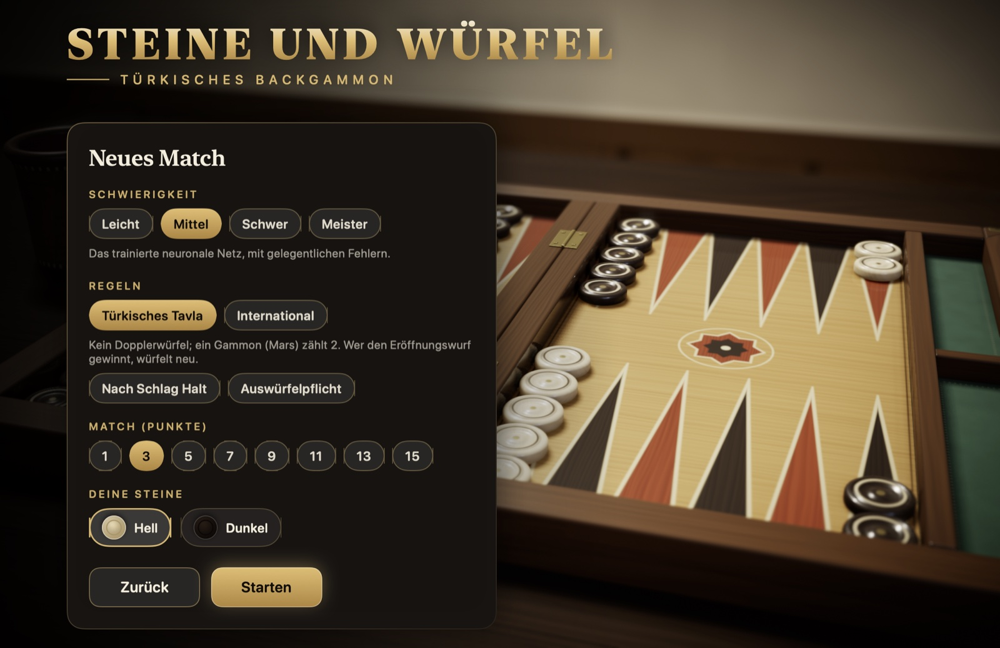
Abbildung 5.1Das Panel „Neues Match“: Schwierigkeit, Regeln, Match oder Sitzung und deine Steine.
Schwierigkeit: „Leicht“ macht oft Fehler und ist ideal zum Lernen. „Mittel“ ist ein trainiertes neuronales Netz, das gelegentlich Fehler macht. „Schwer“ ist ein neuronales Netz, das mit Millionen von Spielen trainiert wurde. „Meister“ berechnet zusätzlich alle möglichen Würfe.
Regeln: „Türkisches Tavla“ oder „International“. Die Unterschiede stehen in Tabelle 2.1. Ist „Türkisches Tavla“ gewählt, erscheinen darunter zwei traditionelle Regeln: „Nach Schlag Halt“ und „Auswürfelpflicht“. Beide sind standardmäßig ausgeschaltet. Die gewählten Regeln bleiben das ganze Match über gleich.
Match oder Sitzung: Unter „Match (Punkte)“ wählst du, auf wie viele Punkte das Match gespielt wird: 1, 3, 5, 7, 9, 11, 13 oder 15. Bei internationalen Regeln gibt es daneben den Reiter „Sitzung“: Eine Sitzung hat keine Matchlänge, die Punkte jedes Spiels werden gezählt, und du beendest die Sitzung, wann du willst. In einer Sitzung erscheinen außerdem die Optionen „Jacoby-Regel“, „Beaver“, „Raccoon“ und „Automatische Verdopplung“; was sie bedeuten, steht in Abschnitt 3.8 unter „Regeln für Match und Sitzung“. Im türkischen Tavla gibt es keine Sitzung.
Deine Steine: „Hell“ oder „Dunkel“. Ganz gleich, was du wählst, deine Steine sind immer unten. Die Farbe des Symbols richtet sich nach dem Steinstil, den du in den Einstellungen gewählt hast: Bei „Rot-schwarzer Lack“ ist der helle Stein rot.
Läuft gerade ein Match, fragt die App nach, bevor ein neues beginnt. Das laufende Match wird gespeichert; über die Karte „Matches“ kannst du zu ihm zurückkehren. Auf der Bestätigungskarte steht auch eine Zusammenfassung des Matches, das beginnen soll. Mit ⌘N kommt dieselbe Rückfrage, auch zwischen zwei Spielen.
5.2 Würfeln und Steine ziehen
Bist du am Zug, erscheint in der rechten Bretthälfte die Schaltfläche „Würfeln“. Klickst du auf die Schaltfläche oder auf die Würfel oder drückst du die Leertaste, fallen die Würfel aus dem Lederbecher aufs Brett. Hast du bei internationalen Regeln das Recht zu doppeln, steht darunter außerdem die Schaltfläche „Doppeln“.
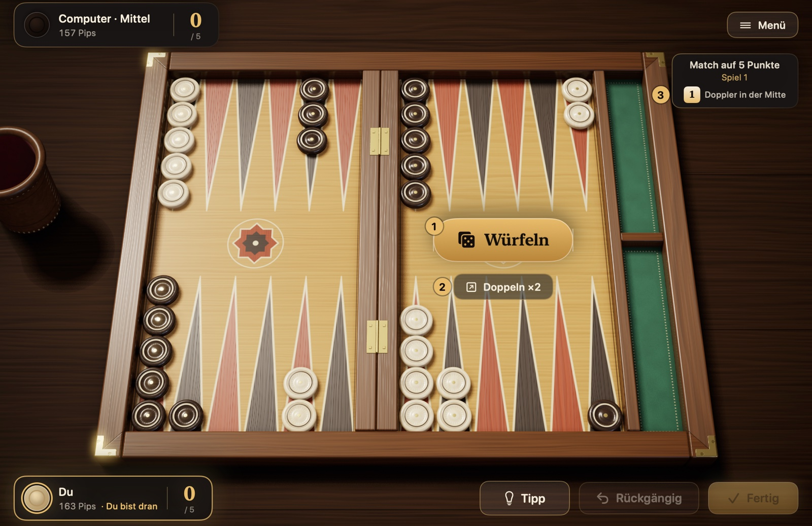
Abbildung 5.2Vor dem Würfeln. 1 Schaltfläche „Würfeln“, 2 Schaltfläche „Doppeln“ (nur bei internationalen Regeln), 3 Doppleranzeige.
Nach dem Würfeln leuchten die Steine, die du ziehen kannst. Einen Stein ziehst du auf eine dieser Arten:
Per Klick: Klicke zuerst auf den Stein; die Felder, auf die er ziehen kann, sind mit einem grünen Ring markiert. Klicke dann auf das Ziel. Ein Ziel, auf dem du einen Blot des Gegners schlagen würdest, ist mit einem roten Fadenkreuz markiert.
Per Drag-and-drop: Nimm den Stein mit der Maus und lass ihn auf dem Ziel los.
Schnell: Ein Doppelklick zieht den Stein mit dem höheren Würfel, ein Rechtsklick mit dem niedrigeren.
Per Tastatur: Tab springt zwischen den ziehbaren Steinen, die Pfeiltasten wählen das Ziel, Return führt den Zug aus.
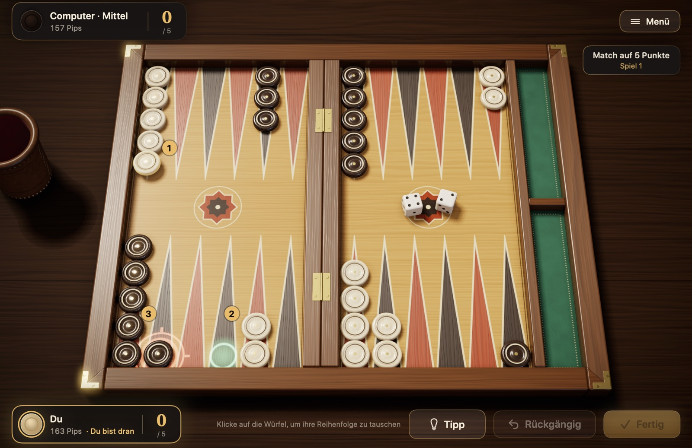
Abbildung 5.3Ein Zug. Gewürfelt wurde 4-2, der Stein auf der 13 ist ausgewählt. 1 der ausgewählte Stein, 2 das leere Feld, auf das er mit der 4 ziehen kann (grüner Ring), 3 das Feld, auf dem er mit der 2 einen Blot des Gegners schlagen kann (rotes Fadenkreuz).
Um die Reihenfolge der Würfel zu ändern, klicke auf die Würfel auf dem Brett. Bist du mit deinem Zug fertig, klicke auf „Fertig“ (Return); bis dahin nimmt „Rückgängig“ (⌘Z) deine Schritte einzeln zurück. Hast du gar keinen möglichen Zug, meldet die App „Kein Zug möglich!“, und der Gegner ist am Zug. Ist das Heimfeld des Gegners ganz geschlossen, während du einen Stein auf der Bar hast, bist du ausgesperrt, und es wird nicht einmal gewürfelt: Auf dem Bildschirm steht „Ausgesperrt“, und der Zug geht direkt an den Gegner.
5.3 Tipps und Spielhilfen
Die Schaltfläche „Tipp“ (⌘I) markiert auf dem Brett den Zug, den die Meister-Engine für diesen Wurf empfiehlt; sobald du deinen ersten Schritt ziehst, verschwindet die Markierung. Bei internationalen Regeln macht sie auch Vorschläge für Doppler-Entscheidungen: vor dem Würfeln „Vorschlag: doppeln“ oder „Vorschlag: nicht doppeln, würfeln“, auf ein Doppel des Computers „Vorschlag: annehmen“ oder „Vorschlag: ablehnen“. Die Tipps, die du nutzt, fließen in die Zusammenfassung am Spielende und in die Statistik ein.
Im Bereich „Spielablauf“ der Einstellungen gibt es Optionen, die das Spielen erleichtern:
Automatisch würfeln: Bist du am Zug, wird von selbst gewürfelt. Kannst du doppeln, wartet die App; die Doppler-Entscheidung bleibt bei dir.
Züge automatisch bestätigen: Dein Zug endet von selbst mit dem letzten Schritt. Ist die Option aus, klickst du auf „Fertig“ und kannst bis dahin noch zurücknehmen.
Erzwungene Züge automatisch spielen: Gibt es nur einen einzigen erlaubten Zug, spielt die App ihn, und dein Zug endet.
Ziehbare Steine hervorheben und Mögliche Ziele umranden: Schalten das Leuchten der Steine und die grünen Ringe ein und aus. Sind die Ringe aus, wird nur ein Ziel umrandet, das du mit der Tastatur wählst.
Schaltfläche „Tipp“ anzeigen und Schaltfläche „Rückgängig“ anzeigen: Ist die jeweilige Option aus, kannst du keinen Tipp abrufen oder keinen gezogenen Schritt zurücknehmen. So kannst du dich selbst prüfen.
5.4 Doppeln und auf ein Doppel antworten
Gedoppelt wird nur bei internationalen Regeln. Bist du am Zug und liegt der Doppler in der Mitte oder bei dir, klicke vor dem Würfeln auf „Doppeln“ (⌘D). Auf der Schaltfläche steht der Wert, auf den der Doppler steigt, zum Beispiel „Doppeln ×2“. Der Computer antwortet sofort: Nimmt er an, geht der Doppler an ihn, und das Spiel geht weiter; lehnt er ab, gewinnst du das Spiel.
Doppelt der Computer, erscheint eine Karte:
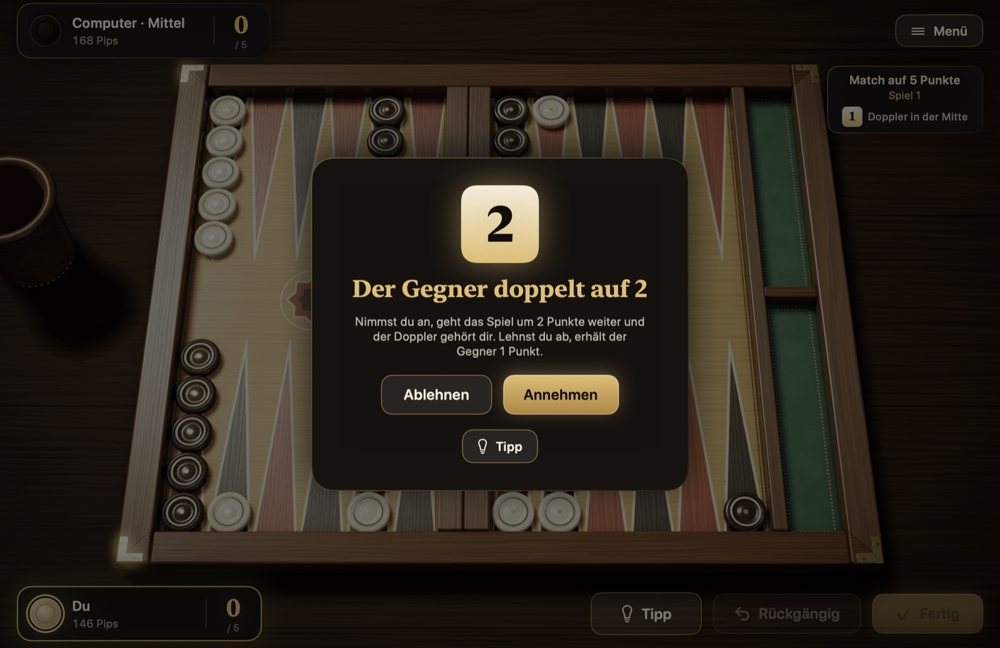
Abbildung 5.4Karte mit dem Dopplerangebot.
Annehmen: Das Spiel geht mit doppeltem Wert weiter, und der Doppler geht an dich.
Ablehnen: Du gibst das Spiel auf; der Gegner bekommt so viele Punkte, wie der Doppler vor dem Angebot wert war.
Beaver: Erscheint in einer Sitzung, wenn „Beaver“ eingeschaltet ist. Du nimmst das Doppel an und verdoppelst den Doppler sofort noch einmal; er bleibt bei dir.
Tipp: Zeigt für deine Entscheidung den Vorschlag der Meister-Engine.
Doppelst du und der Computer sagt Beaver, erscheint eine ähnliche Karte: Du nimmst an, lehnst ab oder verdoppelst, wenn „Raccoon“ eingeschaltet ist, den Doppler noch einmal.
Wert und Besitzer des Dopplers stehen unter der Matchanzeige oben rechts: „Doppler in der Mitte“, „Doppler bei dir“ oder „Doppler beim Gegner“. Im ersten Spiel, nachdem eine Seite im Match nur noch 1 Punkt vom Ziel entfernt ist, wird der Doppler nicht benutzt, und dort steht „Crawford-Spiel“.
5.5 Aufgeben und eine Sitzung beenden
Wähle während eines Spiels im Menü „Spiel“ oder auf der Pausenkarte „Aufgeben“. Auf der Karte schlägst du selbst vor, mit wie vielen Punkten du aufgibst: einfach, als Gammon oder, bei internationalen Regeln, als Backgammon. Unter jeder Möglichkeit steht schon vorher, ob der Gegner annehmen wird. Der Gegner lehnt ein Angebot ab, das unter dem liegt, was die Stellung verspricht, und das Spiel geht weiter; Matchstand und Doppler werden dabei berücksichtigt. Stufen, die nicht möglich sind, erscheinen auf der Karte nicht: Hast du schon mit dem Auswürfeln begonnen, sind Gammon und Backgammon nicht mehr möglich, und im Match wird dem Gegner keine Stufe angeboten, die über die hinausgeht, mit der er das Match ohnehin schon gewinnt.
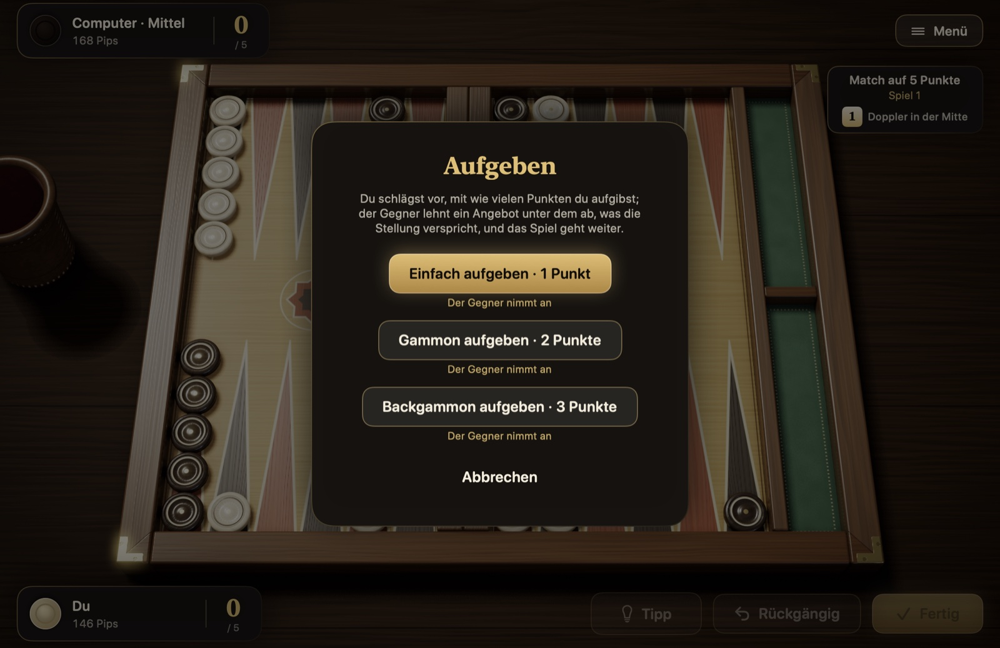
Abbildung 5.5Die Karte „Aufgeben“.
Auch der Computer kann in einem aussichtslosen Rennen von sich aus aufgeben.
Eine Sitzung kannst du nur bei internationalen Regeln wählen, im türkischen Tavla gibt es sie nicht. Eine Sitzung hat keine Matchlänge; du beendest sie selbst mit „Sitzung beenden“. Beendest du sie zwischen zwei Spielen auf der Ergebniskarte, ist die Sitzung sofort vorbei. Willst du sie während eines Spiels beenden, gibst du das laufende Spiel auf; nimmt der Gegner an, werden die Punkte des Spiels gezählt, und die Sitzung endet. Das Ergebnis der Sitzung kommt ins Archiv und in die Statistik.
5.6 Pausieren und ein Match später fortsetzen
Die Schaltfläche „Menü“ oben rechts oder die Esc-Taste pausiert das Spiel; drückst du erneut Esc, geht es weiter. Auf der Pausenkarte findest du „Fortsetzen“, „Einstellungen“, „Spielregeln“, „Zugverlauf“, „Matches“, „Aufgeben“ und „Match verlassen“.
Matches werden automatisch gespeichert. Mit „Match verlassen“ kannst du ins Hauptmenü zurückkehren und die App schließen; „Fortsetzen“ im Hauptmenü öffnet das letzte Match dort, wo du aufgehört hast. Hast du mehrere Matches, listet die Karte „Matches“ die laufenden Matches und das Archiv der beendeten auf. Zu einem laufenden Match kehrst du mit „Fortsetzen“ zurück, ein Match, das du nicht mehr willst, entfernst du mit „Löschen“, und ein beendetes Match siehst du dir mit „Ansehen“ noch einmal an. In jeder Zeile stehen auch das Regelwerk des Matches und die eingeschalteten optionalen Regeln.
5.7 Spielende, Analyse und Statistik
Ist ein Spiel zu Ende, zeigt eine Karte das Ergebnis: die gewonnenen Punkte, den Grund für ein Gammon oder Backgammon, den Matchstand und eine Zusammenfassung des Spiels. Darin stehen die Dauer, der durchschnittliche Wurf beider Seiten, das Würfelglück und die Tipps, die du genutzt hast. Ist das Match vorbei, startet „Neues Match“ auf der Karte ohne Umweg über das Panel ein neues Match mit deinen letzten Einstellungen; unter der Schaltfläche steht eine Zusammenfassung des Matches, das dann beginnt.
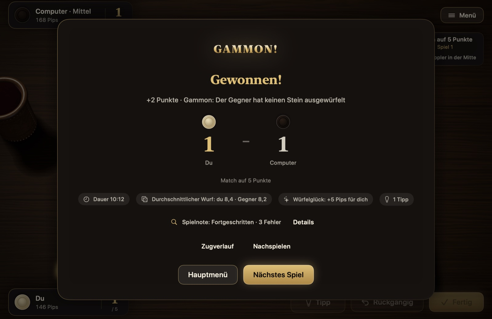
Abbildung 5.6Die Ergebniskarte.
Die „Spielnote“ in der Mitte der Karte ergibt sich daraus, wie die Meister-Engine deine Entscheidungen im Spiel bewertet; daneben stehen ein ungefährer PR-Wert und die Zahl der Fehler. „Details“ öffnet die Analysekarte: Entscheidungen, die mehr als 0,02 Punkte gegenüber der besten Möglichkeit kosten, werden aufgelistet, dein Zug und der bessere nebeneinander. Auch Doppler-Entscheidungen gehören dazu. Ist das Match vorbei, gibt es außerdem eine Note für das Match.
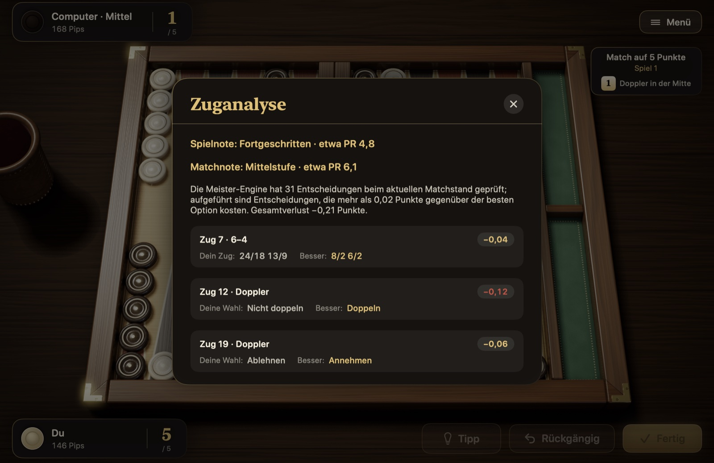
Abbildung 5.7Zuganalyse.
Mit den Schaltflächen unten auf der Ergebniskarte öffnest du den Zugverlauf, spielst das Spiel noch einmal nach, kehrst ins Hauptmenü zurück oder gehst zum nächsten Spiel.
Die Karte „Statistik“ im Hauptmenü zeigt gewonnene und gespielte Matches und Spiele, die Siegquote, deine gewonnenen und erlittenen Gammons, deine längste Siegesserie, die Ergebnisse nach Stufe, die Würfelverteilung und die letzten Matches. Gespielte Sitzungen und die Nettopunkte in Sitzungen werden getrennt geführt. Mit „Statistik zurücksetzen“ fängst du von vorn an.
5.8 Zugverlauf, Nachspielen und Export
„Zugverlauf“ (⌘L) listet alle Züge beider Seiten sowie die Doppler- und Aufgabe-Ereignisse auf. Hat das Match mehrere Spiele, wählst du das Spiel mit den Schaltflächen oben.
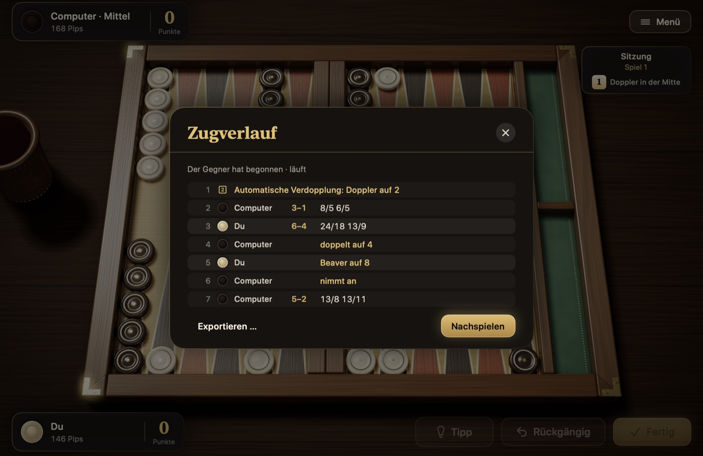
Abbildung 5.8Zugverlauf. Der Verlauf einer Sitzung: Zeilen für die automatische Verdopplung, Züge mit ihren Würfeln, ein Doppel, einen Beaver und eine Annahme.
Ein beendetes Spiel kannst du mit „Nachspielen“ mit den echten Animationen von Anfang an ansehen: ← und → blättern zwischen den Zügen, die Leertaste startet und pausiert. „Exportieren …“ schreibt das Matchprotokoll in drei Formaten: als lesbaren Text (.txt), als .mat, das Jellyfish und XG lesen, und im .sgf-Format von GNU Backgammon. So kannst du dein Match auch mit diesen Programmen analysieren.
5.9 Einstellungen
Die Einstellungen erreichst du über das Hauptmenü oder die Pausenkarte. Änderungen gelten sofort.
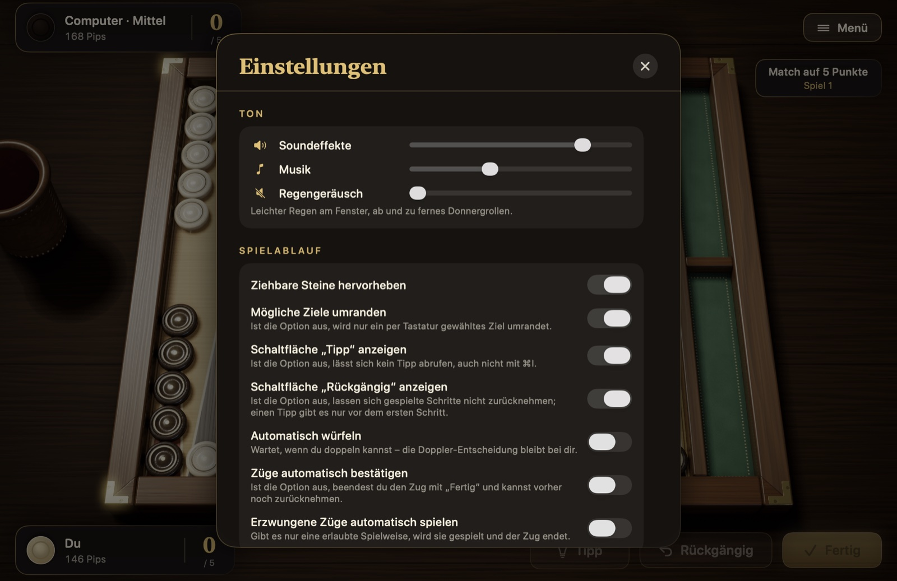
Abbildung 5.9Einstellungen.
Ton: Getrennte Lautstärken für Soundeffekte, Musik und das Regengeräusch am Fenster.
Spielablauf: Ziehbare Steine, Zielringe, die Schaltflächen „Tipp“ und „Rückgängig“, automatisches Würfeln, automatisches Bestätigen und erzwungene Züge; mehr dazu in Abschnitt 5.3. Die Regeln stehen nicht in den Einstellungen: Die beiden traditionellen Regeln des türkischen Tavla wählst du im Panel „Neues Match“.
Tempo: Animationstempo und Bedenkzeit des Gegners. Ist „Würfelbecher“ ausgeschaltet, wird ohne Becher gewürfelt, und das geht schneller.
Darstellung: Brett („Klassischer Nussbaum“, „Perlmutt-Intarsien“, „Ahorn“), Steine („Buchsbaum & Ebenholz“, „Marmor & Onyx“, „Rot-schwarzer Lack“), Würfel („Elfenbein“, „Ebenholz“, „Bernstein“) und Filz („Grün“, „Bordeaux“, „Marineblau“). Der Stil von Steinen und Würfeln verändert auch den Klang; die Steinsymbole auf dem Bildschirm übernehmen zudem die Farben des gewählten Steinstils. „Heimfeld links“ spiegelt das Brett, und du würfelst nach links aus. Die Textgröße kann „Normal“, „Groß“ oder „Sehr groß“ sein.
Kamera: Filmische Kamera (Heranfahrt zu Matchbeginn, tiefe Kreisfahrt am Matchende), Zoom und Kameraneigung.
Sprache: Türkisch, Englisch, Französisch, Deutsch, Spanisch, Portugiesisch und Italienisch. Ist „System“ gewählt, wird die Sprache des Systems verwendet.
5.10 Tastaturkurzbefehle
Alle Züge auf dem Brett lassen sich ohne Maus mit der Tastatur spielen.
Tabelle 5.1 Tastaturkurzbefehle
Taste
Funktion
Leertaste
Würfelt; ist der Zug fertig, bestätigt sie ihn
Return
Bestätigt den Zug; zieht den Stein auf das per Tastatur gewählte Ziel
Tab, ⇧Tab
Springen zwischen den ziehbaren Steinen
Pfeiltasten
Springen zwischen den Zielen des ausgewählten Steins
Esc
Pausiert, erneutes Drücken setzt das Spiel fort; schließt eine geöffnete Karte
⌘Z
Nimmt den letzten Schritt zurück
⌘I
Tipp
⌘D
Doppelt
⌘L
Öffnet den Zugverlauf
⌘N
Neues Match; fragt vorher nach, wenn ein Match läuft, auch zwischen zwei Spielen
⌘?
Öffnet die Karte „Spielregeln“
← →
Beim Nachspielen: vorheriger und nächster Zug
5.11 Bedienungshilfen
Bildschirmleser: Mit VoiceOver kannst du auf dem Brett spielen. Die Felder, die Bar, die ausgewürfelten Steine und die Würfel sind eigene Elemente; bei jedem wird vorgelesen, wem wie viele Steine gehören und ob es ziehbar, ausgewählt oder ein Ziel ist. Deine Würfe, die Züge des Gegners und geschlagene Steine werden angesagt.
Weniger Bewegung: Ist in macOS „Bewegung reduzieren“ aktiviert, werden Kamerafahrten, Menüschwenk und Parallaxe, Würfelbecher, springende Steine und Goldregen abgeschaltet.
Kontrast: Ist in macOS „Kontrast erhöhen“ aktiviert, werden Texte und Linien der Oberfläche deutlicher gezeichnet.
Textgröße: In den Einstellungen kannst du die Schrift auf „Groß“ oder „Sehr groß“ stellen; Karten und Anzeigen wachsen entsprechend mit.
Tastatur: Alle Züge auf dem Brett lassen sich mit der Tastatur spielen; die Tasten stehen in Tabelle 5.1.
Kapitel 6
Zum Nachschlagen
Dieses Kapitel ist zum Nachschlagen gedacht: häufige Fragen, ein Glossar und ein Register. Die Spalte „Siehe“ der Begriffstabelle führt zu den Abschnitten, in denen jeder Begriff erklärt wird.
6.1 Häufige Fragen
Meine Würfel sind schlecht – darf ich aussetzen? Nein. Gibt es einen Zug, den die Würfel erlauben, musst du ihn machen. Ausgesetzt wird nur, wenn sich gar kein Würfel ziehen lässt, und dann ganz von selbst.
Darf ich einen Stein des Gegners ziehen? Nein. Jeder Spieler zieht nur seine eigenen Steine.
Darf ich nach dem Schlagen mit demselben Stein weiterziehen? Nach internationaler Regel ja: Das Schlagen beendet die Reise des Steins nicht, du kannst ihn mit dem verbleibenden Würfel weiterziehen. Im verbreiteten türkischen Tavla ist es dagegen verboten, im eigenen Heimfeld zu schlagen und mit demselben Stein weiterzuziehen. Spielst du in Steine und Würfel nach türkischen Regeln, gilt dieses Verbot, wenn beim neuen Match „Nach Schlag Halt“ gewählt wurde; standardmäßig ist es ausgeschaltet.
Wie viele Steine dürfen höchstens auf einem Feld stehen? Es gibt keine Grenze. Auf deinem eigenen Feld kannst du so viele Steine stapeln, wie du willst.
Darf ich mit dem Auswürfeln beginnen, während ein Stein von mir auf der Bar ist? Nein. Zum Auswürfeln müssen alle deine Steine in deinem Heimfeld stehen; ein Stein auf der Bar gilt als außerhalb des Heimfelds.
Muss ich beide Würfel zusammenzählen und mit einem Stein ziehen? Nein. Du kannst die beiden Würfel auch zwei verschiedenen Steinen geben. Ziehst du mit einem einzigen Stein, muss die Zwischenstation offen sein.
Kann ein Spiel unentschieden enden? Nein. Da abwechselnd gezogen wird, ist immer einer zuerst fertig.
Ich musste einen Punkt in meinem Heimfeld auflösen – ist das ein Fehler? Nicht immer. Manchmal lassen die Würfel keine andere Wahl; die Regel vom erzwungenen Zug hat Vorrang vor allem anderen.
Ich habe in Steine und Würfel versehentlich einen Stein gezogen – was nun? Solange du nicht auf „Fertig“ geklickt hast, kannst du mit „Rückgängig“ die Schritte dieses Zuges zurücknehmen. Ist in den Einstellungen „Züge automatisch bestätigen“ eingeschaltet, endet dein Zug mit dem letzten Schritt und lässt sich nicht mehr zurücknehmen.
Warum ist meine Pipzahl plötzlich gestiegen? Dein Stein wurde geschlagen. Ein Stein, der auf die Bar kommt, kehrt an den Anfang des Weges zurück; deshalb steigt deine Pipzahl um die Strecke, die dieser Stein verloren hat.
6.2 Begriffe und Register
Tabelle 6.1 Begriffe und Register
Begriff
Bedeutung
Siehe
Anker
Ein Punkt aus zwei oder mehr Steinen im Heimfeld des Gegners
Wenn du bis hierher gelesen hast, kennst du alle Regeln des Backgammons, die grundlegenden Spielpläne und jeden Winkel von Steine und Würfel. Alles Weitere lernst du am Brett. Spiel deine ersten Matches auf der Stufe „Leicht“; wirf einen Blick in die Analyse deiner verlorenen Spiele, um zu sehen, welche Entscheidungen dich Punkte gekostet haben, und stell dann eine höhere Stufe ein. Mal lacht dir das Würfelglück, mal deinem Gegner; auf lange Sicht machen deine Entscheidungen den Unterschied.
Seit fünftausend Jahren bringt Backgammon Menschen an den beiden Seiten eines Tisches zusammen. Ich wünsche mir, dass Steine und Würfel ein kleiner Beitrag zu dieser Tradition ist und dir viele schöne Stunden schenkt. Deine Meinungen und Vorschläge helfen, die App weiterzuentwickeln.